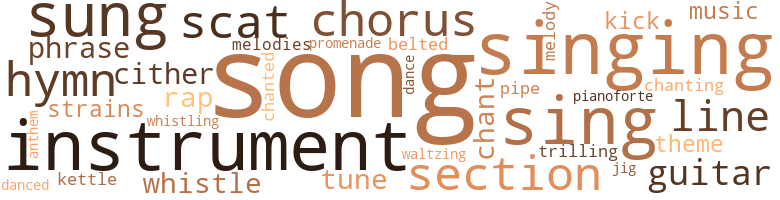
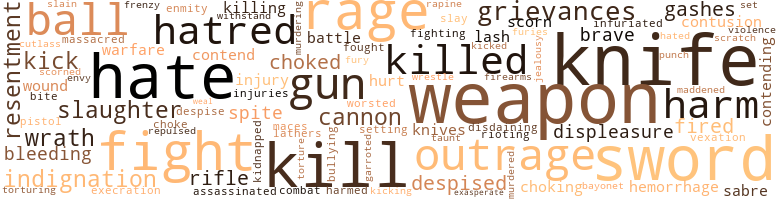
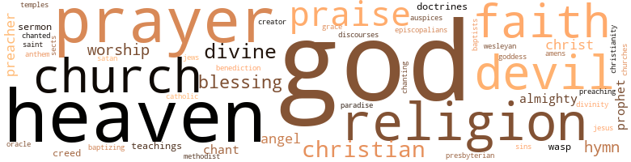

Blake; or The Huts of America, by Delaney, Martin R. (1970)
143 music-related terms matched in this text.
Most frequent terms in this topic: song (24); singing (11); sung (9); sing (7); instrument (6)
belt_out.v.01
Definition: sing loudly and forcefully
| word | sentence |
|---|---|
| belted | Leaving the United Nation of Chickasaw and Choctaw Indians , Henry continued his travel in this the roughest , apparently , of all the states Armed with bowie knives and revolvers openly carried belted around the person , he who displays the greatest number of deadly weapons seems to be considered the greatest man . |
chant.n.01
Definition: a repetitive song in which as many syllables as necessary are assigned to a single tone
| word | sentence |
|---|---|
| chant | Emboldened by what was now thought to be an Englishman , the Negroes had determined to have a merry chant . |
| chant | The whites were now quite desirous for a chant from the blacks , to divert their attention from the stranger which they expected shortly to make Ins appearance above the swelling seas . |
| chant | Every little Negro learned to lisp his name , and the black stevedores at the seaside rung its praise in the packing of his cargoes , liven the old black matron as she sat under the verandah , sung a morning chant to the name of The Great Alcora , whilst the old black invalid , basking in the sun , had not to cheer his hopes but God help de Captin General ! |
chorus.n.01
Definition: any utterance produced simultaneously by a group
| word | sentence |
|---|---|
| chorus | The place was at once thrown into a state of intense excitement , the military called into requisition , dragoons ( lying in every direction , cannon from the old fort sending to forth hourly through the night , thundering peals to give assurance of their sufficiency , and the infantry on duly traversing die streets , stimulating with martial air with voluntary vocalists , who readily joined in chorus to the memorable citing words in the Southern States of - Go tell Jack Coleman , The Negroes are arising ! |
| chorus | But it lessens not our joys , We will sing a merry chorus , For we are the tramping boys . |
| chorus | All uniting in the chorus , O , righteous Father Wilt thou not pity me ; And aid me on to Canada , Where fugitives are free ? |
dance.v.02
Definition: move in a pattern; usually to musical accompaniment; do or perform a dance
| word | sentence |
|---|---|
| dance | Women there are too , in plenty their dresses ' low in the neck and high in the arms , ' covered with gay ribbons and tinsel flowers that dance all day long for the pure love of the fun , joining first one party and then another , constant to none , and therefore have no right to a portion of the money collected . |
dance.v.03
Definition: skip, leap, or move up and down or sideways
| word | sentence |
|---|---|
| danced | " As night comes on all the scattered parties begin to crowd back again to their starting places : they replace the paint and leathers they have danced oil , and repair the ravages of the day . |
guitar.n.01
Definition: a stringed instrument usually having six strings; played by strumming or plucking
| word | sentence |
|---|---|
| guitar | It was full the eleventh hour before the gathering was complete , and except at intervals a ballad and guitar accompaniments by the voluntary offering of some young lady present , there had been no music during the evening . |
| guitar | [ 35 ] In solos of strains the sweetest the Spanish guitar proved but a secondary instrument compared with the touching melodies of the pathetic bango in the hands of this Negro artiste . |
| guitar | Singing and executing of the guitar and bango by the Misses Seraphina Blacus and Ambrosina Cordora , both young , handsome , and accomplished , were very much appreciated by the delighted assemblage . |
| guitar | This favorite servant on all previous occasions when others failed , was usually chosen to supply the place of some absent musician , in which his skill on the Spanish guitar , or African bango . |
hymn.n.01
Definition: a song of praise (to God or to a saint or to a nation)
| word | sentence |
|---|---|
| hymns | " He 'll whistle , sing songs , hymns , pray , swear like a trooper , laugh , and cry , all under the same state of feelings . " |
| hymn | With a peculiar swing of the whip , bringing the lash down upon a certain spot on the exposed skin , the whole person being prepared for the purpose , the boy commenced to whistle almost like a thrush ; another cut changed it to a song , another to a hymn , then a pitiful prayer , when he gave utterance to oaths which would make a Christian shudder , after which he laughed outright ; then from the fullness of his soul he cried : " O maussa , I 's sick ! |
| hymn | The party gathered standing in a semicircle , the clergyman in the center , a hymn being sung and prayer offered rising to their feel , and an exhortation of comfort and encouragement being given , with the fatherly advice and instructions of their domestic guidance in after life by the aged man of God ; the sacred and impressively novel words : " I join you together in the bonds of matrimony ! " gave Henry the pleasure before leaving of seeing upon the floor together , Charles and Polly , Andy and Clara . |
| hymn | After singing the solemn hymn of " Old Hundred " to the words of Before Jehovah 's awful throne , and offering up a solemn prayer by Montego , these people full of hope the highest and expectation the most sanguine , separated for their homes and lodgings near three o'clock in the morning , amidst the most intense feelings and unswerving determination to make a bold and tearless effort to break the shackles of bondage and throw off the galling yoke that so long and grievously tormented them . |
| hymn | an ' been mighty merry , an ' ' joy yehse ' f much ; we now sing praise to de Laid fah wat ' c done fah us , " raising a hymn in which all earnestly joined ; Oh ! |
| anthem | Rising from their knees , Andy commenced an anthem , by which he appeared to be much affected , in the following words : About our future destiny . |
jig.n.01
Definition: music in three-four time for dancing a jig
| word | sentence |
|---|---|
| jig | Come , my boy , bestir yourself an ' do n't stan ' there like a statute ; ca n't you give us a jig ? |
kettle.n.04
Definition: a large hemispherical brass or copper percussion instrument with a drumhead that can be tuned by adjusting the tension on it
| word | sentence |
|---|---|
| kettle | Hasty pudding for the evening being the bill of fare , all sat patiently awaiting the summon of Mammy Judy , some on blocks , some on logs of wood , some on slab benches , some on inverted buckets and halfbarrel wash tubs , and whatever was convenient , while many of the girls and other young people were seated on the floor around against the wall " Hush , chilen ! " admonished Mammy Judy , after carefully seeing that each one down to Tony had been served with a quota from the kettle . |
kick.v.04
Definition: kick a leg up
| word | sentence |
|---|---|
| kick | " We 'll show ye yer places , ye black devils ! " said Ned Bradly , a rowdy , drawing back his foot to kick Henry in the face , as he sat upon the floor against the wall , giving him a slight kick in the side as he passed by him . |
| kick | Several feet in an instant were drawn back to kick , when Slusher interfering , said , " Shendlemans ! |
music.n.01
Definition: an artistic form of auditory communication incorporating instrumental or vocal tones in a structured and continuous manner
| word | sentence |
|---|---|
| music | The hotels too were kept open for the accommodation of the officers of government , and the musicians from Moro Castle , and other bands of music , which from the porticos and corridors , almost incessantly assembled through the night , discoursed to the cheering crowds continually in honor of the Infanta Sovereign of Spain . |
| music | It was full the eleventh hour before the gathering was complete , and except at intervals a ballad and guitar accompaniments by the voluntary offering of some young lady present , there had been no music during the evening . |
musical_instrument.n.01
Definition: any of various devices or contrivances that can be used to produce musical tones or sounds
| word | sentence |
|---|---|
| instrument | On this occasion Pino Golias proved himself master of the favorite instrument of his father land , the African bango . |
| instrument | [ 35 ] In solos of strains the sweetest the Spanish guitar proved but a secondary instrument compared with the touching melodies of the pathetic bango in the hands of this Negro artiste . |
| instrument | This instrument , heretofore neglected and despised by the better class among them , at once became the choice and classically refined by the nearest and dearest historic reminiscences among them , by an association with the evening of the great gathering , from a seclusion of which the momentous question of immediate redemption or an endless degradation and bondage was to be forever settled . |
| instruments | These young ladies were great favorites at the Palace of the Captain General , where the pianoforte and their favorite stringed instruments seldom had their equals to execute upon them . |
| instruments | The black surgeon Pino Golias was their only rival and superior on these instruments . |
| instrument | " But I got a better thing than this ! " he said , holding out and looking at the sword , with a wag of his head " What is that curiously constructed instrument you have there , Gofer , will you show it to me ? " asked Castilla , on seeing under his jacket on the left breast a large weapon . |
| instrument | Do you call that a carving knife ? " earnestly enquired Castina , as Gondolier handed him the formidable instrument . |
| instrument | especially the latter instrument in which he had few , if any equals , was fully put to the test . |
| instruments | At last the important day arrives ; the dawn is ushered in by salvos of artillery from Moro Castle the Negroes pour out of the city gates in crowds to assemble at the places where they are to dress - dainty dressing rooms are they-and the delicate ear is agonized by sounds proceeding from the musical instruments of Africa . |
| instruments | A piece of parchment stretched over a hollow log beaten with hones , or a box or gourd filled with beans or stones , rattled out of all lime , comprise their instruments . |
| instruments | The songs are quite in keeping with the instruments and performers . |
| instruments | " As I was about to say , such is the character of this organization , that punishment and misery are made the instruments for its propagation , so " I ca n't understan ' that part - " " You know nothing at all about it Charles , and you must - " " Stan ' still an ' see da salvation ! " interrupted Andy . |
phrase.n.02
Definition: a short musical passage
| word | sentence |
|---|---|
| phrase | I sha n't be ceremonious , and to give you a history of my errand , and to make a short story of a long one , well ' make a lump job of it , ' to use a homely phrase . " |
| phrase | Happy Jack an ' no trouble ! " the last part of the sentence being a cant phrase commonly in use in that part of the country , to indicate a feeling free from all cares . |
| phrase | " Ship ahoy ! " cried the black in familiar nautical phrase . |
piano.n.01
Definition: a keyboard instrument that is played by depressing keys that cause hammers to strike tuned strings and produce sounds
| word | sentence |
|---|---|
| pianoforte | These young ladies were great favorites at the Palace of the Captain General , where the pianoforte and their favorite stringed instruments seldom had their equals to execute upon them . |
pipe.n.04
Definition: a tubular wind instrument
| word | sentence |
|---|---|
| pipe | I now reach to you the pipe of peace and hold out the olive-branch of hope ! |
promenade.n.01
Definition: a formal ball held for a school class toward the end of the academic year
| word | sentence |
|---|---|
| promenade | That day early in the afternoon Ambrosina Cordora , the daughter of Madame Montego , and Seraphina Blacus took a promenade through a portion of the Almeda . |
rap.n.05
Definition: genre of African-American music of the 1980s and 1990s in which rhyming lyrics are chanted to a musical accompaniment; several forms of rap have emerged
| word | sentence |
|---|---|
| rap | At the conclusion of the last line , a sudden sharp rap at the door startled them , when the old woman , hastening , took down the quilt , enquiring , " Who dat ? " |
| rap | At the moment which Phebe took her seat , nearly exhausted with exercise , a loud rap at the door , preceded by the signal for the evening . |
| rap | With an affectionate leave of his wife , concealing from her his real movement ( she rather suspecting his return to America ) , with sack in hand Blake started ere a member of the family stirred Early this morning a soft rap at the door aroused the poet , who lodged in his study . |
refrain.n.01
Definition: the part of a song where a soloist is joined by a group of singers
| word | sentence |
|---|---|
| chorus | Then in chorus joined the whole company O , could I somehow a ' nother , Drive these tears way ; When I think about my poor old mother , Down upon the Mobile bay . |
| chorus | Then joined in chorus the whole party We are all jogging . |
scat.n.01
Definition: singing jazz; the singer substitutes nonsense syllables for the words of the song and tries to sound like a musical instrument
| word | sentence |
|---|---|
| scat | " Off it is ! " replied Franks , as he invited the gentlemen to take a scat in the carriage already at the door . |
| scat | saluting the watchman , took a scat also upon the quarterdeck , the seamen all taking rest at the time , not knowing what hour they would be called to duty . |
| scat | Whilst the palace was the scene of life and gaiety , thronged with those in the highest enjoyment of their rights , free to go and come when and where they pleased , all fondly uniting in loyalty and deference to do homage to the sovereign demands of Spain , little dreaming of serious contingencies or trouble , there was at the same time going on in another part of the city an affair , though if not so grand and potent at least it may have been equally as interesting , and in all probability much more portentous than the elevated assemblage at the scat of government of Count Alcora , the Captain General the proud and haughty military Chief of Cuba . |
| scat | At the appointed hour , a servant entered the drawing room announcing that the Council Chamber was in readiness , when Gondolier immediately arose following him into an off wing extending back the most distant from the street , which being so completely enveloped with closely clinging creepers and thickly studded shrubbery , that light could not be discerned from an uncurtained window ; at the door of which he took a scat armed with a cutlass and his fearful Cuban carver . |
| scats | " Amen ! " was the response , all rising to their scats . |
section.n.01
Definition: a self-contained part of a larger composition (written or musical)
| word | sentence |
|---|---|
| section | And not only this section , but the whole Mississippi Valley to some extent was to them indebted . |
| section | At another time , passing along in company , Bob was righting up a section of fence , when Jef came along . |
| section | " You do not understand me , Colonel , " she rejoined , " we can have no interests separate from yours ; you know the time-honored motto , ' united we stand , ' and so forth , must apply to the American people under every policy in every section of the Union . " |
| section | " Slop , sir , I go call Susan ! " when , gathering up and drawing around and before her a surplus of the back section , the only remaining sound remnant of the narrow tattered garment that she wore , off she ran behind the gin , where lay in the sun , a number of girls to rest themselves during their hour of " spell . " |
| section | The scythe had been carelessly hung on a section of the worm fence adjoining the barn , near the door of the prison department . |
sing.v.02
Definition: produce tones with the voice
| word | sentence |
|---|---|
| sing | " He 'll whistle , sing songs , hymns , pray , swear like a trooper , laugh , and cry , all under the same state of feelings . " |
| sung | The most attracting lament of the evening was sung to words , a stanza of which is presented in pathos of delicate tenderness , which is but a spray from the stream which gushed out in insuppressible jets from the agitated fountains of their souls , as if in unison with the restless current of the great river upon which they were compelled to toil , their troubled waters could not be quieted . |
| sung | Thang ' God , thang God ! " when she skidded over the floor from side to side , keeping time with a tune sung to the words - " We 'll honor our Lord and Master ; Well honor our Lord and King ; We 'll honor our Lord and Master , And bow at His command ! |
| sing | But it lessens not our joys , We will sing a merry chorus , For we are the tramping boys . |
| sing | " No , " replied Adaline , " I 'm sure I do n't see what they sing to her for ; she 's no ' Merican . |
| sung | The party gathered standing in a semicircle , the clergyman in the center , a hymn being sung and prayer offered rising to their feel , and an exhortation of comfort and encouragement being given , with the fatherly advice and instructions of their domestic guidance in after life by the aged man of God ; the sacred and impressively novel words : " I join you together in the bonds of matrimony ! " gave Henry the pleasure before leaving of seeing upon the floor together , Charles and Polly , Andy and Clara . |
| sung | The young wives all gave vent to sobs of sympathy and joy , when the paison as a solace sung in touching sentiments : Daughters of Zion ! |
| sung | ' Less noise ' was the command , and they sung easier though it may have been more cheerfully . |
| sing | My people are merry when they work , especially at sea ; and they must not be denied the right to sing , a privilege allowed seamen the world over ! " |
| sing | Cheerily , then my lads , cheerily ! " said Paul , who went directly to the cabin , when the Negroes at the command of their leader commenced more cheerfully to sing : O Cuba ! |
| sung | Every little Negro learned to lisp his name , and the black stevedores at the seaside rung its praise in the packing of his cargoes , liven the old black matron as she sat under the verandah , sung a morning chant to the name of The Great Alcora , whilst the old black invalid , basking in the sun , had not to cheer his hopes but God help de Captin General ! |
| sing | And let the wildest numbers roll ; Thy song of fiercest passion sing . |
| Sing | Sing not to me of joy and gladness ; Twill but increase the raging pain . |
| Sing | Sing not to me of landscapes bright . |
| Sing | Sing of the lightning 's lurid Hash , The ocean 's roar , the howling storm . |
| Sing | Sing of the battle 's deadly strife , The ruthless march of war and pillage . |
| singing | After singing the solemn hymn of " Old Hundred " to the words of Before Jehovah 's awful throne , and offering up a solemn prayer by Montego , these people full of hope the highest and expectation the most sanguine , separated for their homes and lodgings near three o'clock in the morning , amidst the most intense feelings and unswerving determination to make a bold and tearless effort to break the shackles of bondage and throw off the galling yoke that so long and grievously tormented them . |
| sing | an ' been mighty merry , an ' ' joy yehse ' f much ; we now sing praise to de Laid fah wat ' c done fah us , " raising a hymn in which all earnestly joined ; Oh ! |
| sung | Ole man fo ' de all gone , hab wud uh prah advised the old woman ; the following being sung in conclusion : The Lord is here , and the Lord is all around us ; Canaan , Canaan 's a very happy home O , glory ! |
singing.n.01
Definition: the act of singing vocal music
| word | sentence |
|---|---|
| singing | " Now 's da time ! " when he commenced shuffling about over the floor , stamping and singing at the top of his voice - Come all my brethren , let us take a rest , While the moon shines blight and clear ; Old master died and left us all at last . |
| singing | I wish I was man , I 'd break ' is neck , so I would ! " during which the betrayer was shuffling , dancing , and singing at such a pitch as to attract attention from without . |
| singing | falling into a deep sleep early on the evening of the third day , he was suddenly aroused about eleven o'clock by the harsh singing of the black firemen on the steamer : Natchez under the Hill ! |
| singing | Taking a northeasterly course of Indiana , Andy being an accustomed , singer , commenced , in lively glee and cheerful strains , singing to the expressive words : We are like a band of pilgrims , In a strange and foreign land . |
| singing | I golly , do n't you hear that ? " said Dave Starkweather , the blacksmith , to his wile , both of whom on hearing the unusual noise of singing , thrust their heads out of the door of a little log hut , stood patiently listening to the song , every word of which they distinctly caught . |
| singing | " Dave , ask em in the shop to rest , " suggested the wife in a hurried whisper , elbowing her husband as the party advanced , having ceased singing so soon as they saw the faces of white persons . |
| singing | On entering the shop , the person at the bellows , a tall , able-bodied young man , was observed to pass out at the back door , a number of persons of both sexes to come frequently look in , and depart , succeeded by others ; no import being attached to this , supposing themselves to be an attraction , partly from their singing , and mainly from their color being a novelty in the neighborhood During conversation with the blacksmith , he after eyeing very closely the five strangers , was observed to walk behind the door , stand for some minutes looking as if reading , when resuming his place at the anvil , after which he went out the back door . |
| singing | To this order the Negroes paid little attention , but continued singing the more cheerfully . |
| Singing | Singing and executing of the guitar and bango by the Misses Seraphina Blacus and Ambrosina Cordora , both young , handsome , and accomplished , were very much appreciated by the delighted assemblage . |
| singing | Rising from their knees with tears trickling down their checks , the old slaves endeavored to ease their troubled souls by singing , Oh , when shall my sorrows subside . |
| singing | The slaves now fell upon their knees in silent communion , all being affected to the shedding of tears , a period being put to their devotion by a sorrowful trembling of Henry 's voice singing to the following touching words : Farewell , farewell , farewell ! |
song.n.01
Definition: a short musical composition with words
| word | sentence |
|---|---|
| songs | " He 'll whistle , sing songs , hymns , pray , swear like a trooper , laugh , and cry , all under the same state of feelings . " |
| song | With a peculiar swing of the whip , bringing the lash down upon a certain spot on the exposed skin , the whole person being prepared for the purpose , the boy commenced to whistle almost like a thrush ; another cut changed it to a song , another to a hymn , then a pitiful prayer , when he gave utterance to oaths which would make a Christian shudder , after which he laughed outright ; then from the fullness of his soul he cried : " O maussa , I 's sick ! |
| song | " Let go that line ! " sternly commanded the captain , Henry obeying orders on the shore , when the boat glided steadily up the stream , seemingly in unison with the lively though rude and sorrowful song of the black firemen - I 'm a-goin ' to Texas - O ! |
| song | Thus provided for , standing upon the hank for a few minutes , with steady gaze listening to the sad song of his oppressed brethren as they left the spot , and reflecting still more on the miserable fate of the young mulatto freeman Lewis Grimes held by the slave-holder Dr. Johns of Texas , he , with renewed energy , determined that nothing short of an interference by Divine Providence should stop his plans and progress . |
| song | Now could be seen and realized the expressive description in the popular song of the vocalist Cargill : I suppose you 've heard how New Orleans Is famed for wealth and beauty ; There 's girls of every hue , it seems . |
| songs | In the distance , on the levee or in the harbor among the steamers , the songs of the boatmen were incessant . |
| song | Men of sorrow they are in reality ; for if there be a class of men anywhere to be found , whose sentiments of song and words of lament are made to reach the sympathies of others , the black slave-boatmen of the Mississippi river is that class . |
| songs | [ 12 ] Fastened by the unyielding links of the iron cable of despotism , reconciling themselves to a lifelong misery , they arc seemingly contented by soothing their sorrows with songs and sentiments of apparently cheerful but in reality wailing lamentations . |
| song | In the capacity of leader , as is their custom , one poor fellow in pitiful tones led off the song of the evening : Way down upon the Mobile river . |
| song | Supposing their proximity to the British Provinces made them safe , with an imprudence not before committed by the discreet runaways , when treating a blacksmith 's shop a mile and a half from the village , Andy in his usual manner , with stentorian voice , commenced the following song : I 'm on my way to Canada , That cold and dreary land : The dire effects of slavery . |
| song | I golly , do n't you hear that ? " said Dave Starkweather , the blacksmith , to his wile , both of whom on hearing the unusual noise of singing , thrust their heads out of the door of a little log hut , stood patiently listening to the song , every word of which they distinctly caught . |
| song | Early next morning , the first indication of the kind since the ship set sail , was the attention of the whites being arrested by a merry sea song of the blacks , which they chanted with cheerful glee , and rather portentous mood and decisive air : My country , the land of my birth , Farewell to thy fetters and thee ! |
| song | Aware of the change that had taken place in his superior , Captain Paul , he felt the more sensible that the song was a taunt by the blacks to the Americans . |
| song | For his imposition the impertinent black would have met at the hands of the crude American a severe chastisement , but the words of the song still rang in his ears , that he was : Goin ' to Afraka Where de white man dare not stay . |
| song | Suddenly they were startled by a song of lamentation , the most remarkable and pathetic , in which the traffic , gains , and wealth of her father , the punishment , suffering and sorrows of her mother 's race , caused by him and a king unworthy to be classed with the race of her mother , were uttered in tones of scathing rebuke . |
| song | Draco during the time stood in tears over her bed , and when the song and last frantic wail was given , taking his wife by one hand , and his youngest daughter , who lay on the bed beside her sister , by the other , leaning over and impressing kisses long and many upon her cheeks , he promised the distracted Angelina never again to traffic in human beings . |
| song | So soon as Blake , who for a short time had withdrawn , made his appearance among them , they commenced in loud tones a glee : We have hatred dark and deep for the fetter and the thong ; We bring light to prisoned spirits , for the captive wail a song ! |
| song | Passing by Gascar who stood alone , Royer desired to know what the blacks were doing so long together , and why they did not entertain the vessel with a merry sea song . |
| song | Next morning at the earliest dawn , when the song of animated nature , birds , reptiles , and insects which in Cuba generally enliven the night and cheer the spoils with varied tones of discordant harmony gaye way for the noise and clamor of the designing inhabitants of the port ; among the first few who appeared on the quay was a mulatto gentleman . |
| song | In poetry he wrote them in sentiments of song , enigmatically , though comprehensively . |
| song | These words , though softly and fearfully spoken as if in thunder tones were indelibly impressed on every heart , while the sentiments of song , like a lightning flash , ran through every mind the length and breadth of the island . |
| song | " Your husband is our leader , and as you see the legions advancing , fear not , as you shall hear this song to comfort you , and encourage on the portentous Army of Emancipation : Be patient in your misery , he meek in your despair , Be patient , O he patient , suffer on , suffer on ! |
| song | We have hatred dark and deep for the fetter and the thong , We bring light to prisoned spirits , for the captive wail a song ; We are all for freedom , we are all for freedom . |
| song | And let the wildest numbers roll ; Thy song of fiercest passion sing . |
| song | Thy song may then an echo wake . |
| songs | The songs are quite in keeping with the instruments and performers . |
| songs | On this day they are allowed to use their own language and their own songs , a privilege denied them on other days , lest they might lay plans for a general rising . |
| song | whistle us a song ! |
| song | " Yes , the same old slave song - Trust to the Lord . ' |
theme.n.03
Definition: (music) melodic subject of a musical composition
| word | sentence |
|---|---|
| theme | " Insurrection shall be my theme ! |
| theme | From the Suspension Budge through the great New York Central Railway to Albany , and theme by the Hudson River , Henry reached the city on the steamer " Hendrick Hudson , " in the middle of an afternoon , first securing a boarding house a new thing to him - he proceeded by direction to an intelligence office , which he found kept by a mulatto gentleman . |
tone.v.01
Definition: utter monotonously and repetitively and rhythmically
| word | sentence |
|---|---|
| chanting | [ 11 ] Along the private streets , sitting under the verandas , in the doors with half-closed jalousies , or promenading unconcernedly the public ways , mournfully humming in solace or chanting in lively glee , could be seen and heard many a Creole , male or female , black , white or mixed race , sometimes in reverential praise of Father , Son and Holy Ghost - Madonna , and the Heavenly Host ! |
| chanted | Early next morning , the first indication of the kind since the ship set sail , was the attention of the whites being arrested by a merry sea song of the blacks , which they chanted with cheerful glee , and rather portentous mood and decisive air : My country , the land of my birth , Farewell to thy fetters and thee ! |
tune.n.01
Definition: a succession of notes forming a distinctive sequence
| word | sentence |
|---|---|
| tune | Thang ' God , thang God ! " when she skidded over the floor from side to side , keeping time with a tune sung to the words - " We 'll honor our Lord and Master ; Well honor our Lord and King ; We 'll honor our Lord and Master , And bow at His command ! |
| tune | In both town and country the disappointment was sad , when told by Henry that the tune to strike had not yet come ; that they for the present must " Stand still and see the salvation ! " |
| strains | Taking a northeasterly course of Indiana , Andy being an accustomed , singer , commenced , in lively glee and cheerful strains , singing to the expressive words : We are like a band of pilgrims , In a strange and foreign land . |
| line | " No we ai n't , Ad ' line , not sence the battle o ' Waterloo , an ' I golly , we would n't be it we was . |
| lines | Snatching it up and hastening to a secluded spot in the grove , on opening it gave the following lines of touching and chaste appeal to his manhood : How sweet at close of silent eve The harp 's responsive sound ; How sweet the vows that ne'er deceive . |
| melody | On arriving at the mansion , the family were all in the garden , recreating among the shrubbery , enjoying an atmosphere freighted with odor , and vibrating with the melody of the feathered inhabitants . |
| tune | " There is now an opportunity to do so , Mr. Albertis , as our man Gilbert and she seem much attached ; and he may make proposals to buy her , " suggested Madame Seeley , intentionally for him to profit by the lout , as he was passing at the tune it was spoken . |
| lines | " Curse ** not him from whose lines you came . " |
| lines | During this time the approaching vessel was coursing from northeast to southwest , the " Vulture " from southeast to northwest , their lines of direction forming an X. Whilst every eye with fear was strained at the advancing seaman , suddenly she was seen to tack to the northeast , her direction being such as to have to meet the " Vulture " at a point in a given distance . |
| strains | With silent and suppressed demonstrations , men and women waved hand and handkerchief , Blake and Placido entering at the instant when the amateur orchestra , instrumental and vocal commenced in strains most impressive : All hail thou true and noble chief . |
| melodies | [ 35 ] In solos of strains the sweetest the Spanish guitar proved but a secondary instrument compared with the touching melodies of the pathetic bango in the hands of this Negro artiste . |
waltz.v.01
Definition: dance a waltz
| word | sentence |
|---|---|
| waltzing | " All day long they keep up a movement of some kind , either dancing or waltzing to an almost incredible degree . |
warble.v.01
Definition: sing or play with trills, alternating with the half note above or below
| word | sentence |
|---|---|
| trilling | In the courts , narrow alleys , and byways might have been seen squads of idle slaves or trilling wayward Creoles and Spaniards , playing at chicken-hazard , pitching quoits on bets , or betting silver at a toss . |
whistle.n.01
Definition: the sound made by something moving rapidly or by steam coming out of a small aperture
| word | sentence |
|---|---|
| whistling | So simple is it that the trees of the forest or an orchard illustrate it ; flocks of birds or domestic cattle , fields of corn , hemp , or sugar cane ; tobacco , rice , or cotton , the whistling of the wind , rustling of the leaves , flashing of lightning , roaring of thunder , and running of streams all keep it constantly before their eyes and in their memory , so that they ca n't forget it if they would . " |
whistle.v.01
Definition: make whistling sounds
| word | sentence |
|---|---|
| whistle | " He 'll whistle , sing songs , hymns , pray , swear like a trooper , laugh , and cry , all under the same state of feelings . " |
| whistle | With a peculiar swing of the whip , bringing the lash down upon a certain spot on the exposed skin , the whole person being prepared for the purpose , the boy commenced to whistle almost like a thrush ; another cut changed it to a song , another to a hymn , then a pitiful prayer , when he gave utterance to oaths which would make a Christian shudder , after which he laughed outright ; then from the fullness of his soul he cried : " O maussa , I 's sick ! |
| whistle | whistle us a song ! |
whistle.v.05
Definition: make a whining, ringing, or whistling sound
| word | sentence |
|---|---|
| sung | Anseh prah ! " responded the old man , in tears ; when Aunt Rachel in a grain of sorrowful pathos , sung to the expressive words in the slaves ' lament : " In eighteen hundred and twenty-three They said their people should be free ! |
| sung | sung to an air with which they ever on the approach of a steamer . |
zither.n.01
Definition: a musical stringed instrument with strings stretched over a flat sounding board; it is laid flat and played with a plectrum and with fingers
| word | sentence |
|---|---|
| cither | In this ' your blacks arc cither voters , or reckoned among the inhabitants . " |
| cither | I do n't care cither old or young , though I prefer an old or middle-aged man . " |
| cither | " Your questions become rather pressing , mammy ; I ca n't tell you that cither . " |
259 violence-related terms matched in this text.
Most frequent terms in this topic: knife (16); sword (12); kill (12); weapon (12); fight (9)
abhorrence.n.01
Definition: hate coupled with disgust
| word | sentence |
|---|---|
| execration | Hut many most excellent mulattos and quadroons condemn with execration this auxiliary of oppression . |
abrasion.n.01
Definition: an abraded area where the skin is torn or worn off
| word | sentence |
|---|---|
| scratch | Giving his head an unconscious scratch accompanied with a slight twitch of the corner of the mouth , Franks seemed to comprehend the whole of it . |
annoyance.n.02
Definition: anger produced by some annoying irritation
| word | sentence |
|---|---|
| vexation | " Gonvound dish bishnesh ! " exclaimed Slusher with vexation . |
assassinate.v.01
Definition: murder; especially of socially prominent persons
| word | sentence |
|---|---|
| assassinated | They had just returned with the body of the assassinated statesman to the wretched home of his distracted family , some ten miles beyond the hut of Uncle Jerry . |
battle.v.01
Definition: battle or contend against in or as if in a battle
| word | sentence |
|---|---|
| battle | And all that 's human in me urge , To battle for my innate right ! |
| battle | Then above the roaring storm might be heard the voice of Royer , with words of startling blasphemy , endeavoring to encourage on to battle the seamen with the elements ; when again it might be heard in tones of discouragement but not less blasphemous , calling upon the thunder and lightning to dash in pieces the vessel , rather than it should be taken by a gang of black devils . |
bayonet.n.01
Definition: a knife that can be fixed to the end of a rifle and used as a weapon
| word | sentence |
|---|---|
| bayonet | The glittering bayonet and brand Are coming with the stream of life ; When the dark clouds of battle roll . |
bleeding.n.01
Definition: the flow of blood from a ruptured blood vessel
| word | sentence |
|---|---|
| hemorrhage | Please stop little ! " casting up gobs of hemorrhage . |
| hemorrhage | The company now left Grason 's , Franks for the enjoyment of home , Ballard and Armsted for Jackson , and the poor boy Reuben , from hemorrhage of the lungs , that evening left time for eternity . |
| bleeding | A severe cut with the hide across the face instantly silenced the petitions ol Abigail , when handing her the whip , she compelled her to scourge her own child till he fell motionless and bleeding at her feet . |
| bleeding | The frantic black was shot as he ran through the street ; fell bleeding , and arrested , the ball immediately surrounded , the inmates arrested and confined in Moro Castle . |
| bleeding | " Never mind , he dozes now , " admonished Montego in a whisper , looking round at the couch where lay the bleeding poet . |
bruise.n.01
Definition: an injury that doesn't break the skin but results in some discoloration
| word | sentence |
|---|---|
| contusion | On again imploring him , Royer screamed " Do you look at me that way , you black devil ! " when , turning his face away to conceal his grief , the mate gave him another blow on the cheek bone , producing contusion , when the tears stole down his manly face , baptizing with sorrow his bare expanded breast heaving with emotions of despair . |
| contusion | Justin Pampo , the black surgeon , was called in , who , on examination , pronounced a serious contusion of the cheek , with slight concussion of the brain . |
cannon.n.04
Definition: heavy automatic gun fired from an airplane
| word | sentence |
|---|---|
| cannon | " I am compelled to pick with my toes , a hundred pound of cotton a day , * and I can sit on a stool and touch off a cannon ! " said this promising young man whose heart panted with an unsuppressed throb for liberty . |
| cannon | Though the cannon at the old fort in the Lower Faubourg had fired the significant warning , admonishing the slaves as well as free blacks to limit their movement , still there were passing to and fro with seeming indifference Negroes , both free and slaves , as well as the whites and Creole quadroons , fearlessly along the public highways , in seeming defiance of the established usage of Negro limitation . |
| cannon | The place was at once thrown into a state of intense excitement , the military called into requisition , dragoons ( lying in every direction , cannon from the old fort sending to forth hourly through the night , thundering peals to give assurance of their sufficiency , and the infantry on duly traversing die streets , stimulating with martial air with voluntary vocalists , who readily joined in chorus to the memorable citing words in the Southern States of - Go tell Jack Coleman , The Negroes are arising ! |
| cannon | The slaves throughout the island were , as is customary on such occasions , given a general holiday , and all within ten leagues of the city poured in from every direction , like the gathering of black and threatening clouds , necessary to a fearful storm , while the cannon from the castle roared in tones as thunder preceding a tempest . |
contemn.v.01
Definition: look down on with disdain
| word | sentence |
|---|---|
| disdaining | Mr. Farland was a good and bravehearted man , disdaining to appeal for redress to bis country , lest it might be regarded as the result of cowardice . |
| despised | Spurned by the one and despised by the other , they are the least happy of all the classes . |
| despise | " Goodman is his name , an American , from Pennsylvania I believe ; one of your real poor while men , whom our Negro slaves so much despise and hate to have over them . " |
| scorn | The by-word of tyrants-the scorn of the earth , A mockery to all thou shalt be ! |
| scorn | My brothers henceforth - for ye scorn to be SLAVES , As ye toss up your crests to the gale ; Farewell to the land of the blood-hound and chain , My path is away o'er the fetterless main ! |
| scorned | Who scorned to live a cowering slave ; Thy name shall stand on history 's leaf . |
| despised | This instrument , heretofore neglected and despised by the better class among them , at once became the choice and classically refined by the nearest and dearest historic reminiscences among them , by an association with the evening of the great gathering , from a seclusion of which the momentous question of immediate redemption or an endless degradation and bondage was to be forever settled . |
| despised | Sensibly touched with the unexpected scenes around her , the simple , good-hearted Abyssa wept aloud , clasping her hands exclaiming " O Lord , look down on one of the least of these thy despised children , and protect her from harm ! " |
contend.v.06
Definition: be engaged in a fight; carry on a fight
| word | sentence |
|---|---|
| contending | Ho eyo ! " could be heard above the winds and dashing spray , the seamen manfullv contending against the tempest , being fearfully exposed to the raging , merciless blast above , and the restless and dangerous elements of passion below . |
| contending | That is a positive admission that the mixed bloods are inferior to the pure-blooded descendants of Africa I did not expect it to come to this , I think the acknowledgement of an equality of classes is sufficient for any purpose , without having to regard ourselves as inferiors just what we are all contending against " I see you do not understand my position , Madame Cordora ; let me make it plain to you , " further explained the poet . |
| contend | Should we under such circumstances strike for liberty , it must also be for independent self-government , because we have the prejudices of the mother-country and the white colonists alike to contend against . |
| contend | " The Negroes , " said another , " the only formidable enemy in the event of a patriot movement we should have to contend against , must be got out of the way . |
craze.n.02
Definition: state of violent mental agitation
| word | sentence |
|---|---|
| frenzy | This was the shock which electrified every nerve and dormant fiber of his system ; the stimulant which exciting him to frenzy , induced him to neutralize every agency in the fearfully approaching issue , as fast as it could be known ; and Gofer was the only offender known to his excellency . |
cut.n.05
Definition: a wound made by cutting
| word | sentence |
|---|---|
| gashes | Armsted stood aside whittling a stick ; but when Ballard saw , at every cut the flesh turn open in gashes streaming down with gore , till at last in agony he appealed for mercy , he involuntarily found his hand with a grasp on the whip , arresting its further application . |
| gashes | " These Negroes are determined on mischief , and we will have to keep a close watch over them , if we wish to keep gashes out of our throats ! " |
| gashes | " Let us neither invite nor provoke those gashes to be made , Mr. Royer . |
cutlas.n.01
Definition: a short heavy curved sword with one edge; formerly used by sailors
| word | sentence |
|---|---|
| cutlass | At the appointed hour , a servant entered the drawing room announcing that the Council Chamber was in readiness , when Gondolier immediately arose following him into an off wing extending back the most distant from the street , which being so completely enveloped with closely clinging creepers and thickly studded shrubbery , that light could not be discerned from an uncurtained window ; at the door of which he took a scat armed with a cutlass and his fearful Cuban carver . |
defy.v.01
Definition: resist or confront with resistance
| word | sentence |
|---|---|
| withstand | For weeks subsequent to the evening of the last King 's Day , the blacks had to withstand the most trying difficulties . |
displeasure.n.01
Definition: the feeling of being displeased or annoyed or dissatisfied with someone or something
| word | sentence |
|---|---|
| displeasure | Night had now somewhat advanced , the guests retired ; and the news of the displeasure of the mistress toward Lotty and Pomp having spread through the place , many of the slaves had come from their huts concealing themselves in the shrubbery around the mansion to watch , well knowing that punishment would be the consequence . |
| displeasure | The blacks were now under a new order of things , the destruction of the captives having frightened them , and all excepting Blake passed under the ordeal of Royer and Garcia 's displeasure ; with blasphemy ever on his lips , he was ready to abuse and insult the feelings of all to whom he spoke . |
| displeasure | This was opportune , proving a most fortunate and happy pretext for an honorable escape from the fiery ordeal which awaited them by the terrible displeasure of England . |
envy.n.01
Definition: a feeling of grudging admiration and desire to have something that is possessed by another
| word | sentence |
|---|---|
| envy | A dreamy existence of the most fearful apprehensions , of dread , horror and dismay ; suspicion and distrust , jealousy and envy continually pervade the community ; and Havana , New Orleans , Charleston or Richmond may be thrown into consternation by an idle expression of the most trifling or ordinary ignorant black . |
fight.n.02
Definition: the act of fighting; any contest or struggle
| word | sentence |
|---|---|
| combat | I 'd fight them single combat , man to man ! " and again he started with a manly will , as fixed and determined in his purpose as though no obstructions lay in his pathway . |
fight.n.05
Definition: a boxing or wrestling match
| word | sentence |
|---|---|
| fight | Black man in Florida fight much , and Indian like ' im heap ! " |
| fight | " I 's de frien ' on Gamby Gholar ; an ' I an ' Gennel Gabel fit in de Malution wall , an ' da want no sich fight in ' dare as dat in Gabel wall ! " |
| fight | " In the morning why , when does the fight take place ? " |
| fight | Would rouse my soul to brave the fight . |
fight.v.02
Definition: fight against or resist strongly
| word | sentence |
|---|---|
| fight | " How could you fight ? " said Henry . |
| fight | I 'd fight them single combat , man to man ! " and again he started with a manly will , as fixed and determined in his purpose as though no obstructions lay in his pathway . |
| fight | They would fight if in their own country they were united as the Indians here , and not scattered thousands of miles apart as they are . |
| fight | If you want white man to love you , you must fight im ! " concluded the intelligent old Choctaw . |
| fighting | Henry subscribed to his eminent qualifications as a warrior , assuring him that those were the kind of fighting men they then needed among the blacks . |
| fight | " I do n't intend to fight him . |
| fought | he little knew the unnatural feelings and course pursued toward his race by many Canadians , those too pretending to be Englishmen by birth , with some of whom the blacks had fought side by side in the memorable crusade made upon that fairest portion of Her Majesty 's Colonial Possessions , by Americans in disguise , calling themselves " Patriots . " |
firearm.n.01
Definition: a portable gun
| word | sentence |
|---|---|
| firearms | In the general rebellion that was to ensue , firearms at the commencement were to be prohibited , as the slaughter which was to commence in the dead of night could be prosecuted with silence , and thereby prevent a premature alarm . |
flog.v.01
Definition: beat severely with a whip or rod
| word | sentence |
|---|---|
| lathers | " Well , brethren , mothers , and lathers ! |
fury.n.01
Definition: a feeling of intense anger
| word | sentence |
|---|---|
| rage | Stiff rage , sir , is one thing , franchisement another ; the one a mere privilege-a thing permitted - the other a right inherent , that which is inviolable - can not be interfered with . |
| rage | " Hold your breath , sir , else I 'll stop it ! " in a rage replied the young chief . |
| rage | e in terrible rage ! ' |
| rage | In a rage the flask was thrown in the dark , and alighted near his feet upright in the lulls of grass , when the old man in turn seizing the vessel , exclaiming aloud . |
| rage | " Madam ! " exclaimed Seeley , giving vent loan irritable temper now excited to a rage . |
| rage | " Not another word , you black imp ! " exclaimed Franks , with an uplifted staff in a rage , " or I 'll strike you down in an instant ! " |
| rage | I 'll dispose of him to the hardest Negro-trader I can find ! " said Franks in a rage . |
| fury | Mere he descried the master standing in an altitude of determined resistance , boldly and fearlessly peering at the frowning clouds , as though to invoke the fury of the skies . |
| furies | The storm raged , the waters dashed , while the vessel like a cork was tossed amidst the furies of the hurricane , and not a sound nor whisper heard but frightful antecedents . |
| rage | involuntarily started a pace forward , pressing his teeth upon his lip , and placing his hand on the hilt of his sword for a moment , looked a rage of vengeance at the whites . " |
| rage | One can not help thinking of the menace of the Spanish Government that Cuba shall be either Spanish or African , and when we see these savages in their play more like wild animals than human beings , the idea what their rage would probably be , makes the boldest shudder . |
gag.v.06
Definition: cause to retch or choke
| word | sentence |
|---|---|
| choke | Slusher , you ca n't choke that down , no how you can fix in . |
| choked | When Henry became choked with grief which found an audible response from the heart of every child of sorrow present . |
| choked | And - " " So will I ! " interrupted Celia Bonselle , choked with feelings of sympathy , at the instant when Seeley and Spencer reentered the room , leaving their hats in the piazza . |
| choking | insensible and bloody , the mother gave way to choking sobs of inexpressible grief . |
| choking | " One ! " was the only reply , when she turned away with choking emotion . |
| choked | He seized me under loud and solemn protest , collated and choked me . |
garrote.v.01
Definition: strangle with an iron collar
| word | sentence |
|---|---|
| garroted | Among the absurdities to which this report gave rise , none were greater than those which found their way into the Havana morning journals one of which was " El Diario , " hawked about the streets and eagerly brought up by the news seeking population to the effect that " Dr. M -- n , the British consul , having been caught , tried , found guilty and afterwards confessed to having been concerned in a Negro insurrection in Cuba , was to be hanged , shot or garroted " ; while another report had him " imprisoned , " " publicly whipped , " and " transported to the mines in Spain . " |
grudge.n.01
Definition: a resentment strong enough to justify retaliation
| word | sentence |
|---|---|
| grievances | Sad would be to him the fact when he heard that the construction given by authority to these grievances , when requested to remedy or remove them , was , that they were " local contingencies to be reached alone by those who inflicted the injuries . " |
| grievances | " We have petitioned and prayed for a redress of grievances , and not only been refused but spurned and ridiculed with greater restrictions placed upon us . |
| grievances | " In the name of God , I now declare war against our oppressors , provided Spain does not redress our grievances ! " proclaimed Blake . |
| grievances | On recovering sufficiently to relate his grievances , a thrill of terror and almost irrepressible indignation were manifestly felt " This is certainly a serious state of affairs ; and that , too , without a medium of redress , " said the surgeon . |
| grievances | " Yes , " replied Gondolier , " and we ought to by this time be able to redress our grievances . |
gun.n.01
Definition: a weapon that discharges a missile at high velocity (especially from a metal tube or barrel)
| word | sentence |
|---|---|
| gun | ' The Indian , like game before the bow , is passing away before the gun of the white man ! " |
| gun | And respecting the contingencies of insurrection , you are not more safe than here In New Orleans , as in Havana , the great gun at the fort must at a certain hour every night be filed , to intimidate and keep down the Negroes ; and there as here , while you are unsuspectingly sleeping in your quiet bed in seeming safety , a guard for private and public safety must be kept through the night , and even secret guards through the day , to keep in check the disposition to rebellion on the part of the slave population . |
| gun | Leisurely promenading among the moving mass , deeply engaged in conversation on the momentous subject of their political and social condition as a race , and position in community as a class , at the instant when Placido named the injustice and despotism of the city ordinances toward them , the great gun fired its evening alarm . |
| gun | An ' sure nagurs hai n't no business out fornint de firin o ' de gun . |
| gun | The Negroes and mulattoes were eyed with suspicion , and instead of the accustomed nine o'clock alarm , every hour during the night a gun from the castle thundered the terrible warning , executing the order throughout the prevailing excitement . |
| gun | On one of those eventful evenings in the upper Almeda , just alter the alarm of the gun , a black man who had been seen in close conversation with a white was arrested , and exhibited a " pass " purporting to have emanated from a foreign functionary in the city . |
harm.v.01
Definition: cause or do harm to
| word | sentence |
|---|---|
| harmed | There is no danger that a ' good ' master or mistress will ever he harmed by the slaves . |
hate.n.01
Definition: the emotion of intense dislike; a feeling of dislike so strong that it demands action
| word | sentence |
|---|---|
| hatred | Here the most relentless hatred appears to exist against the Negro , who seems to be regarded but as an animated thing of convenience or a domesticated animal , reared for the service of his master . |
| hatred | Like those of Charleston , some of the light mixed bloods of Richmond hold against the blacks and pure-blooded Negroes the strongest prejudice and hatred , all engendered by the teachings of their Negro-fearing master-fathers . |
| hatred | So soon as Blake , who for a short time had withdrawn , made his appearance among them , they commenced in loud tones a glee : We have hatred dark and deep for the fetter and the thong ; We bring light to prisoned spirits , for the captive wail a song ! |
| hatred | We have hatred dark and deep for the fetter and the thong , We bring light to prisoned spirits , for the captive wail a song ; We are all for freedom , we are all for freedom . |
| hatred | The effects of the reception ballad was electrical every kind of demonstration indicating the soul 's deep sympathy and heartfelt hatred to oppression , with cautious suppression , was made in silence . |
hate.v.01
Definition: dislike intensely; feel antipathy or aversion towards
| word | sentence |
|---|---|
| hates | " I mean to let her go to the man she most hates , that 's Crow . " |
| hates | " Why do you think she hates Crow so badly ? " |
| hate | " I tells yeh , Henry , it was mighty hand for me to make up my mine to leave ole Potteh ; but even sence you an ' Chaules an ' me made de vow togedder , I got mo ' an ' mo ' to hate ' im . |
| hate | " Goodman is his name , an American , from Pennsylvania I believe ; one of your real poor while men , whom our Negro slaves so much despise and hate to have over them . " |
| hate | " Curse the niggers , I hate 'em ! " retorted Royer impatiently . |
| hated | The Count was a pious and haughty Castilian , and the planters near Matanzas generally being Americans , a restless , dissatisfied class , ever plotting schemes to keep up excitement in the island , thereby having continual cause for complaint ; he hated them as only a member of the Cortez Council could do a colonial " patriot , " as the American party termed themselves . |
| hate | " General , pardon me but I do hate them reptiles so ! " |
| hate | We should not ' hate ' our fellow man , as God made us all , " admonished Montego . |
| hate | General ; they hate us , an ' I 'll do them as they do us . |
| hate | " They do n't all hate us ; there are some good ones among them , as well as other people . " |
| hate | I hate 'em ' let me into the streets and give me but half a chance and I 'll unjoint them faster than ever I did a roast pig for the palace dinner table . " |
| hate | Bui I hate ' im so , case he nothin ' but po ' wite man , no how I know ' im he come from Fagina on - " " Never mind his origin , Ailcey , tell me what you know concerning his visit in the house . " |
| hates | " I is goin ' to , but da ugly ole devil , I hates ' im so ! |
hostility.n.02
Definition: a state of deep-seated ill-will
| word | sentence |
|---|---|
| enmity | " Such friendship is worse than open enmity , my dear , and should be studiously shunned . " |
hurt.v.04
Definition: cause damage or affect negatively
| word | sentence |
|---|---|
| hurt | No one that I know of designs to hurt the Negro girl . |
indignation.n.01
Definition: a feeling of righteous anger
| word | sentence |
|---|---|
| indignation | An emotion of unutterable indignation would swell the heart of the determined slave , and almost compel him to curse the country of his adoption . |
| indignation | " Loose ! " replied Spencer ; when again the thunder pealed as if uttering Heaven 's indignation , while the lightning 's forked streaks displayed the threatening of its wrath . |
| indignation | Why have we so long submitted to them ? " said the Madame with a burst of indignation , taking her seat amidst demonstrations of intense emotion . |
| outrage | Every day brought to the ears of the unhappy blacks fresh news of some new outrage , but as yet this had not been extended to the belter class among them . |
| outrage | The divine aspirations escaping the poet 's lips reached his oppressor 's ears , and the wretch who with perfidy had just stricken him to the earth , was now touched with sympathy at the outrage perpetrated by his own hand " Listen , listen ! " admonished he . |
| indignation | On recovering sufficiently to relate his grievances , a thrill of terror and almost irrepressible indignation were manifestly felt " This is certainly a serious state of affairs ; and that , too , without a medium of redress , " said the surgeon . |
| outrages | I see ! " exclaimed Madame Sebastian , "' tis but a continuance of the outrages commenced on Placido . |
| outrage | " Have mercy on -- " " Ef He do n't I will ! " interrupted Gondolier who just entered in time to catch the exclamation of his wife , lie having learned of the outrage previously in the streets . |
| outrage | " By yonder blue heavens , I 'll avenge this outrage ! " said Montego , embracing the mother and daughter as they sat wailing . |
| outrage | My lot is cast with that of my race , whether for weal or woe , " exclaimed Ambrosina , with brightened countenance ; when Gondolier , rejoicing as he left the room to spread among the blacks an authentic statement of the outrage : " Woe be unto those devils of whites , I say ! " |
infuriate.v.01
Definition: make furious
| word | sentence |
|---|---|
| infuriated | " Dis night , dis night au neveh ! " boisterously yelled the now infuriated man at the top of his voice . |
| exasperate | " We must not exasperate , nor even aggravate the whites , Señor Gondolier , " remarked Madame Barbosa , " as we must guard against making bad worse " I wish I was a man , I 'd lay the city in ashes this night , so I would , " retorted Ambrosina . |
injury.n.01
Definition: any physical damage to the body caused by violence or accident or fracture etc.
| word | sentence |
|---|---|
| hurt | a nigger hurt 'em when he knows he 's not a runaway ? " enquired Richard Hester Rutherford . |
| harm | Looking at the ugly beast , Henry had determined did it approach to harm , to slay it ; but instead , it quietly coiled up and lay at the door as if asleep , which reminded him of queer and unmeaning sounds as they approached , uttered by Gholar , which explained that the animal had been trained to approach when called as any other pet . |
| injury | Charles having been wounded , affected inability to stand , but the injury being a flesh wound , was not serious . |
| injuries | Sad would be to him the fact when he heard that the construction given by authority to these grievances , when requested to remedy or remove them , was , that they were " local contingencies to be reached alone by those who inflicted the injuries . " |
| harm | Adelaide , she means no harm at all . |
| harm | How dare you whisper in Madame Bonselle 's ear , and that -- " " I 'm sure , mistress , I meant no harm ! |
| harm | I mean no harm in asking you . " |
| harm | Sensibly touched with the unexpected scenes around her , the simple , good-hearted Abyssa wept aloud , clasping her hands exclaiming " O Lord , look down on one of the least of these thy despised children , and protect her from harm ! " |
| injury | " No , mammy , I 'm incapable of stealing from any one , but I have , from time to time , taken by littles , some of the earnings due me for more than eighteen years ' service to this man Franks , which at the low rate of two hundred dollars a year , would amount to sixteen hundred dollars more than I secured , exclusive of the interest , which would have more than supplied my clothing , to say nothing of the injury done me by degrading me as a slave . |
jealousy.n.01
Definition: a feeling of jealous envy (especially of a rival)
| word | sentence |
|---|---|
| jealousy | A dreamy existence of the most fearful apprehensions , of dread , horror and dismay ; suspicion and distrust , jealousy and envy continually pervade the community ; and Havana , New Orleans , Charleston or Richmond may be thrown into consternation by an idle expression of the most trifling or ordinary ignorant black . |
kick.v.04
Definition: kick a leg up
| word | sentence |
|---|---|
| kick | " We 'll show ye yer places , ye black devils ! " said Ned Bradly , a rowdy , drawing back his foot to kick Henry in the face , as he sat upon the floor against the wall , giving him a slight kick in the side as he passed by him . |
| kick | Several feet in an instant were drawn back to kick , when Slusher interfering , said , " Shendlemans ! |
kick_back.v.02
Definition: spring back, as from a forceful thrust
| word | sentence |
|---|---|
| kick | E run about yendeh so much an ' kick up ' e heel dat ' e talk so much gramma an ' wot not , dat body haudly undehstan ' ! |
| kicked | Sold again to a severe mistress , then to a heartless , cruel man for the worst of designs , by whom she had been almost daily beaten , frequently knocked down , kicked and stamped on , once struck and left for dead ; and even smoked and burnt to subdue her . |
| kick | Yeh go out yandah , yeh kick up yeh heel , git yeh head clean full proclamation an ' sich like dat , an ' let debil fool yeh , den go fool long wid wite folks long so , sho ! |
| kicking | Before he could recover himself the man had leaped over the counter , knocked off his hat , kicking it into the street and seized him by the collar of the coat . |
kidnap.v.01
Definition: take away to an undisclosed location against their will and usually in order to extract a ransom
| word | sentence |
|---|---|
| kidnapped | The hut was of superior construction to those of the slaves generally in the colony ; the family of a superior order , proved to be native African , having learned English on the coast , French Creole at New Orleans , and Spanish at Cuba ; but ten years having elapsed since they were kidnapped , the whole family by chance getting together . |
kill.v.10
Definition: cause the death of, without intention
| word | sentence |
|---|---|
| kill | " Da say befo ' ' e come heah way down in Fagina , he kill a man , ole po ' wite ovehseeah ! " |
| kill | chile , de man da kill down yondah ; all day long da been lookin ' fob 'em to come . " |
| kill | " Yes , chile , dat 's it , da kill im down dah . " |
| kill | da kill one-notha in cole blood , sometime at de table cat in ' . |
| kill | " Come , Colonel , give them a trial ; we must have something going on to kill time , " suggested one of the party , " But what will he try 'em on ? " said another ; " there 's no niggers to hunt . " |
| kill | A nigger kill them ! |
| killed | " Well , its a blamed pity , anyhow , that such fine animals were killed ; and no clue as yet , I believe , to the perpetration of the deed , " said the Sheriff . |
| kill | Sam them , if a nigger ony done so-jis ' made a pass at 'em , an ' I 'll be hanged if they did n't yelp like wild cats , an almost kill 'em selves runin ' away ! " at which explanation the peals of laughter were deafening . |
| kill | e got seben long toof , any on 'em kill yeh like flash ! " tapping it slightly on the head with a twig of grapevine which he carried in his hand . |
| killed | " He beat her like a dog ; and one evening just at dusk he came in and ordered her to leave and go over to the great house ; when she refused , telling him she would not , if he killed her . |
| kill | Mistress will kill me ! |
| kill | What made you kill those beautiful birds and oh ! |
| kill | " O , Miss Seeley , dat ai n't nothin ' to kill a bird ! |
| killed | In di same way dal de whiles is all to be seized , one for each , da is to have one to set fire to each house in all de towns at da same lime , an ' every white dat makes ' is escape is to be ketched an ' killed as ' e runs into de country to escape de fire ! '' |
| killed | One while was said to have been killed ; another mortally , a third and fourth seriously wounded . |
| killed | " How many plantations sacked and what the number of whites killed ? " |
| kill | I now go as a runaway , and will be suspected of lurking about in the thickets , swamps and caves ; then to make the ruse complete , just as often as you think it necessary , to make a good impression , you must kill a shoat , take a lamb , pig , turkey , goose , chickens , ham of bacon from the smoke house , a loaf of bread or crock of butter from the spring house , and throw them down into the old waste well at the back of the old quarters , always leaving the heads of the fowls lying about and the blood of the larger animals . |
killing.n.02
Definition: the act of terminating a life
| word | sentence |
|---|---|
| killing | Curiosity now , with some anxiety induced Henry to look for the cause of it , when with no little alarm , he discovered a handbill fully descriptive of himself and comrades , having been issued in the town of St. Genevieve , offering a heavy reward , particularizing the scene at the Mississippi ferry , the killing of the horses as an aggravated offense , because depriving a poor man ol his only means of livelihood , being , designed to strengthen inducements to apprehend them , the bill being signed " John Harris . " |
| killing | looking at the pile of insects , as though he was anxious to jump upon them with both feet Madam Seeley , as encouragement , admitted his dexterity and skill in the art of killing , when the boy sauntered away toward the pantry to refresh himself , being well satisfied with his reputation as a naturalist " Just in time , Henry ! " said Placido . |
knife.n.02
Definition: a weapon with a handle and blade with a sharp point
| word | sentence |
|---|---|
| knives | Leaving the United Nation of Chickasaw and Choctaw Indians , Henry continued his travel in this the roughest , apparently , of all the states Armed with bowie knives and revolvers openly carried belted around the person , he who displays the greatest number of deadly weapons seems to be considered the greatest man . |
| knife | On enquiry , it appeared that in the senate a misunderstanding on the rules of order and parliamentary usage occurred , when the Speaker , conceiving himself insulted by the senator who had the floor , deliberately arose from his chair , when approaching the senator , drove a bowie knife through his body from the chest , which laid him a corpse upon the senate floor . |
| knife | When placing them in the stable , lights then being in requisition , Henry discovered in a crevice between the wall an the end of the feed-trough a common butcher knife used for the purpose of repairing harness . |
| knife | Henry arising , took the knife , cutting loose himself and companions , but leaving the pinions still about their limbs as though fastened , resumed his position upon the bundle of straw . |
| knife | Dropping upon his knees to loosen the cord , at this moment , Henry standing erect brandishing the keen glistening blade of the knife before him his companions having sprung to their feet " Do n't you breathe , " exclaimed the intrepid unfettered slave , " or I 'll bury the blade deep in your bosom ! |
| knife | Abruptly leaving him , Royer advanced to the main hatchway , when Paul following after , they made ready to enter , each officer with a sabre at his side , revolver studded in his belt , and an unsheathed bowie knife in his hand . |
| knives | Armed with a heavy weapon found in the hold , Mendi stood in readiness for the conflict ; with which on crushing a box to pieces , billhooks or sugar knives were strewn about the place . |
| knife | " O , nothing , sir , but a knife . |
| knife | Do you call that a carving knife ? " earnestly enquired Castina , as Gondolier handed him the formidable instrument . |
| knife | I cut the pattern out of a barrel stave , and had the knife manufactured to order . " |
| knife | So you see sir , by making a carving knife , I present something that comes in general use as a domestic and family convenience , with which every person may supply himself without suspicion , especially the blacks . |
| knife | " But your knife , Señor Gondolier , on this occasion will be of no use to you , there being no meats to carve , " said Madame Cordora . |
| knife | The weapon from its original peculiarity excited much interest and no little alarm among the novices and less experienced among them , especially the female portion Its breadth was that of the widest common carving knife . |
| knife | He simply called it the " Cuban carver , " or " Gondolier 's carving knife . " |
| knife | Gofer Gondolier stationed on the outside of the door , desired , as he said , no better weapon of defence than his own carving knife . |
| knife | " No sell , ' e didn ' ; w ' en ' e goed , ' e took wid ' im ' is big new carvin ' knife . |
| knife | Give me a revolver , knife , club , brickbat , or anything with which to defend myself , and I 'll put a varment to flight . |
| knife | As they shed the blood of our brother two days ago by dashing him on the pavement , and the blood of our sister here today by a horsewhip , I would like to shed theirs with a knife , " replied he . |
mace.n.01
Definition: (trademark) a liquid that temporarily disables a person; prepared as an aerosol and sprayed in the face, it irritates the eyes and causes dizziness and immobilization
| word | sentence |
|---|---|
| maces | With a sudden spring of their rattles , the gendarmes , who in cloisters had surrounded the house , and by constant menacing gestures with their maces kept the great dog , which stood back in a corner , in a snarling position in fear , arrested the miscreant , taking him directly to the old fort calaboose . |
madden.v.03
Definition: make mad
| word | sentence |
|---|---|
| maddened | " Where the mischief have you been ! " roared the man , almost maddened by a too free indulgence , on seeing Blake on deck for the first time since the vessel mooted . |
malice.n.01
Definition: feeling a need to see others suffer
| word | sentence |
|---|---|
| spite | " In spite of all I can do , she will put on airs in the presence of white persons , and I 'm determined to break her , if I have to break her neck ! " |
| spite | " There is no use , Adelaide , in cutting off one 's nose to spite his face ; for the truth of the matter is . |
| spite | if I do n't hasten to take that sum , she can decline giving me anything at all , and go to the parish priest and he declared free , in spite of all I can say or do ! " |
massacre.v.01
Definition: kill a large number of people indiscriminately
| word | sentence |
|---|---|
| massacred | Alarm and consternation succeeded pleasure and repose , sleep for the time seemed to have departed from the eyes of the inhabitants , men , women and children ran every direction through the streets , seeming determined if they were to be massacred , that it should be done in the open highways rather than secretly in their own houses . |
murder.v.01
Definition: kill intentionally and with premeditation
| word | sentence |
|---|---|
| slay | Looking at the ugly beast , Henry had determined did it approach to harm , to slay it ; but instead , it quietly coiled up and lay at the door as if asleep , which reminded him of queer and unmeaning sounds as they approached , uttered by Gholar , which explained that the animal had been trained to approach when called as any other pet . |
| murdering | " These devils of ' patriots ' as they call themselves , have been murdering him as sure 's you 're born , just as they 'll do the whole of us if we do n't begin first " " Gondolier , I 'm surprised ! " replied Montego . |
| murdered | But we 're neglecting our murdered brother there , disputing about them serpents which the Scriptures told us long ago should have their heads mashed , " said Gondolier . |
| slain | ' He that killeth with the sword , will be slain with the sword , ' remember , " admonished Madame Montego . |
musket_ball.n.01
Definition: a solid projectile that is shot by a musket
| word | sentence |
|---|---|
| balls | Tins was the evening of the day of Mardi Gras , and from long-established and time-honored custom , the celebration which commenced in the morning was now being consummated by games , shows , exhibitions , theatrical performances , festivals , masquerade balls , and numerous entertainments and gatherings in the evening . |
| ball | The villagers following in quick pursuit , every horse which could be readily obtained being put on the chase , the slaves were overtaken , fired upon a ball lodging in Charles ' thigh overpowered , and arrested . |
| ball | All is then wound up by a ball . |
| balls | The money derived from the sale of licenses for Negro balls forms no contemptible item in the income of the Queen Mother Christiana . " |
| ball | During the African ball this evening , a party of the rebels called at a restaurateur , where getting among them a stupid , demented slave whom for hours they kept stimulated with spirits , then aroused to a state of intense excitement by dreadful tales of horror , they placed him in a close carriage , had him taken to the door of the hall in which the hall was held , and when at the height of their amusement he was ushered into the hall crying , " Blood , blood , blood ! |
| ball | The frantic black was shot as he ran through the street ; fell bleeding , and arrested , the ball immediately surrounded , the inmates arrested and confined in Moro Castle . |
open_fire.v.01
Definition: start firing a weapon
| word | sentence |
|---|---|
| fired | Though the cannon at the old fort in the Lower Faubourg had fired the significant warning , admonishing the slaves as well as free blacks to limit their movement , still there were passing to and fro with seeming indifference Negroes , both free and slaves , as well as the whites and Creole quadroons , fearlessly along the public highways , in seeming defiance of the established usage of Negro limitation . |
| fired | The villagers following in quick pursuit , every horse which could be readily obtained being put on the chase , the slaves were overtaken , fired upon a ball lodging in Charles ' thigh overpowered , and arrested . |
| fired | Leisurely promenading among the moving mass , deeply engaged in conversation on the momentous subject of their political and social condition as a race , and position in community as a class , at the instant when Placido named the injustice and despotism of the city ordinances toward them , the great gun fired its evening alarm . |
pistol.n.01
Definition: a firearm that is held and fired with one hand
| word | sentence |
|---|---|
| pistol | With light and pistol in hand , Franey , mounting the stairway commanded a surrender . |
punch.n.01
Definition: (boxing) a blow with the fist
| word | sentence |
|---|---|
| punch | On looking imploringly at his abuser , he gave him a punch with the butt end of the bar , drawing blood , which streamed down his face . |
rape.n.02
Definition: the act of despoiling a country in warfare
| word | sentence |
|---|---|
| rapine | The scenes of rapine , woe and dread . |
repel.v.03
Definition: force or drive back
| word | sentence |
|---|---|
| repulsed | The hatches being opened , those standing nearest fell back from the stench escaping as if repulsed by an explosion of gas . |
resentment.n.01
Definition: a feeling of deep and bitter anger and ill-will
| word | sentence |
|---|---|
| resentment | " Nothing at all ! " replied he with eyes flashing resentment and suffused with tears . |
| resentment | " You 're mistaken , sir ; he 's not my husband ! " exclaimed Cornelia with resentment . |
| resentment | Our overzealousness sometimes , in a good or a bad cause , if you please , makes us aggravate the resentment we are endeavoring to stave off . " |
| resentment | The severe ordeal through which the rebel party had recently passed tended only to awaken in them against the blacks feelings of the bitterest resentment . |
rifle.n.01
Definition: a shoulder firearm with a long barrel and a rifled bore
| word | sentence |
|---|---|
| rifle | " Because he guards me with a heavy loaded rifle , and I ca n't get a chance . " |
| rifle | " Yes , but he makes me sleep in the stateroom with him , keeping his rifle at his bedside . " |
| rifle | Henry seized a well charged rifle belonging to the boatman , his comrades each with a well-aimed six-barreled weapon . |
rioting.n.01
Definition: a state of disorder involving group violence
| word | sentence |
|---|---|
| rioting | The upper windows being well secured , the blacks thus locked in , were left to their fate , whilst their captors comfortably housed , were rioting in triumph through the night over the misfortune , and blasted prospects for liberty . |
saber.n.01
Definition: a fencing sword with a v-shaped blade and a slightly curved handle
| word | sentence |
|---|---|
| sabre | Would draw my sabre from its sheath , And drive the hot blood through my veins , To rush for liberty or death ! |
| sabre | Abruptly leaving him , Royer advanced to the main hatchway , when Paul following after , they made ready to enter , each officer with a sabre at his side , revolver studded in his belt , and an unsheathed bowie knife in his hand . |
sic.v.01
Definition: urge to attack someone
| word | sentence |
|---|---|
| setting | " Gentlemen , help yourselves to some spirits , " setting on the table a large flask of Jamaica rum , just taken from his lips . |
| set | Maddened to desperation at the tearing away of his wife during his absence from her child and home , he had confronted his master at the hazard of life , been set upon the auction block in the midst of an assemblage of anxious slavetraders , escaped being sold , traversed the greater part of the slaveholding states amid dangers the most imminent ; been pursued , taken , and escaped , frequently during which time , he , too , had his faith much shaken , and found his dependence in Divine aid wavering . |
slaughter.n.03
Definition: the savage and excessive killing of many people
| word | sentence |
|---|---|
| slaughter | From plantation to plantation did he go , sowing the seeds of future devastation and ruin to the master and redemption to the slave , an antecedent more terrible in its anticipation than the warning voice of the destroying Angel in commanding the slaughter of the firstborn of Egypt . |
| slaughter | And slaughter reigns without control . |
| slaughter | In the general rebellion that was to ensue , firearms at the commencement were to be prohibited , as the slaughter which was to commence in the dead of night could be prosecuted with silence , and thereby prevent a premature alarm . |
| slaughter | " Da is all to be hid , in an ' out o ' doors , one black for every white in each house on all de plantations , an ' all at once at dc same lime , each one is to seize a white and slaughter ' im . " |
sting.n.03
Definition: a painful wound caused by the thrust of an insect's stinger into skin
| word | sentence |
|---|---|
| bite | da calm bite yeh ! " |
strong-arm.v.02
Definition: be bossy towards
| word | sentence |
|---|---|
| bullying | " Well , gentlemen , " said Tom Overton , a burly , bullying barroom person , " we 'd best git these blacks out of the way , if they 's any fun up tonight . " |
sword.n.01
Definition: a cutting or thrusting weapon that has a long metal blade and a hilt with a hand guard
| word | sentence |
|---|---|
| sword | I 'll soon quiet 'em , " replied he , who , armed with sword and whip in hand , ordering the whites to follow him , entered the hold , commanding silence . |
| sword | Royer drew with a brandish his sword , shook with a threat his whip , then gave him a look of authority , and left the hold followed by his companions . |
| sword | Follow me ! " exclaimed Royer in a torrent of passion entering the hold , armed with sword and revolver . |
| sword | Gondolier , " said Castina , who sat as guard at the door , on resigning his seat and handing him the sword , " I leave you my post in charge ; see that you do your duly ! " |
| sword | " But I got a better thing than this ! " he said , holding out and looking at the sword , with a wag of his head " What is that curiously constructed instrument you have there , Gofer , will you show it to me ? " asked Castilla , on seeing under his jacket on the left breast a large weapon . |
| sword | involuntarily started a pace forward , pressing his teeth upon his lip , and placing his hand on the hilt of his sword for a moment , looked a rage of vengeance at the whites . " |
| sword | " Intensely watching with a steady countenance the chase of the dogs , when a Negro was caught and uttered a scream of agony ; just as the shout of applause from the multitude rent the air involuntarily drawing his sword partly from the scabbord , with a suppressed voice , though full in my hearing , exclaimed : ' by the Holy Virgin , 't is too bad ! ' |
| sword | Recollecting himself and adjusting his sword , turning to me he dissemblingly remarked ' a well executed chase Lady Alcora ; very well done ! |
| sword | O , fit and prepare us for the work that is before us a mighty undertaking ; go with us to the battlefield be our buckler and shield , sword and spear , and strengthen us for the conflict ; and be with such of us who fall in the struggle , through the dark valley and shadow of death . |
| sword | Should the disaffected party persist in then seditious indications on this occasion , the Captain General intended at the head of an army of Negroes to put the rebels to a merciless sword . |
| sword | ' He that killeth with the sword , will be slain with the sword , ' remember , " admonished Madame Montego . |
| sword | ' He that killeth with the sword , will be slain with the sword , ' remember , " admonished Madame Montego . |
torment.v.01
Definition: torment emotionally or mentally
| word | sentence |
|---|---|
| torturing | Dominico , the perspiration breaking upon Henry , who spent a night of torturing impatience . |
| torture | O ! " was the cry from a hundred voices , as the last torture was inflicted upon them . |
twit.n.02
Definition: aggravation by deriding or mocking or criticizing
| word | sentence |
|---|---|
| taunt | Aware of the change that had taken place in his superior , Captain Paul , he felt the more sensible that the song was a taunt by the blacks to the Americans . |
violence.n.01
Definition: an act of aggression (as one against a person who resists)
| word | sentence |
|---|---|
| violence | The law in its wisdom supposes it better to lose our properly than our lives ; better to let the Negro have his liberty at his own expense at a price fixed by the law , than have him to take his liberty and the Island by violence at the expense of our blood . |
wale.n.01
Definition: a raised mark on the skin (as produced by the blow of a whip); characteristic of many allergic reactions
| word | sentence |
|---|---|
| weal | My lot is cast with that of my race , whether for weal or woe , " exclaimed Ambrosina , with brightened countenance ; when Gondolier , rejoicing as he left the room to spread among the blacks an authentic statement of the outrage : " Woe be unto those devils of whites , I say ! " |
war.n.03
Definition: an active struggle between competing entities
| word | sentence |
|---|---|
| warfare | " I am not fit , brother , for a spiritual leader ; my warfare is not Heavenly , but earthly ; I have not to do with angels , but with men ; not with righteousness , but wickedness . |
| warfare | She had been a Mohammedan , but , going into the Eba country to reside , had been converted to Christianity by missionary influence , but sold to Dahomi by the Ibadans , by whom she was taken in warfare . |
weapon.n.01
Definition: any instrument or instrumentality used in fighting or hunting
| word | sentence |
|---|---|
| weapons | Leaving the United Nation of Chickasaw and Choctaw Indians , Henry continued his travel in this the roughest , apparently , of all the states Armed with bowie knives and revolvers openly carried belted around the person , he who displays the greatest number of deadly weapons seems to be considered the greatest man . |
| weapon | The dogs were the best animals of the kind , and quickly trailed out their game ; but Henry , with a well-aimed weapon , slew each ferocious beast as it approached him , leaving them weltering in their own blood instead of feasting on his , as would have been the case had he not overpowered them . |
| weapons | Seth seizing him from behind by a firm grasp of the collar with both hands , Tib sprang forward , slipping easily out of it , leaving the overcoat suspended in his assailant 's hands , displaying studded around his waist a formidable array of deathly weapons , when rushing out of the front door , he in terrible accents exclaimed - " Insurrection ! |
| weapon | " That will do , " exclaimed Henry , " you are near enough I can bring you down there , " at the same time presenting a well-charged six-barrel weapon of death ; when the affrighted Dutchman fell on the opposite side of the fence unharmed , and Henry put down his weapon without a fire . |
| weapon | " That will do , " exclaimed Henry , " you are near enough I can bring you down there , " at the same time presenting a well-charged six-barrel weapon of death ; when the affrighted Dutchman fell on the opposite side of the fence unharmed , and Henry put down his weapon without a fire . |
| weapon | Henry seized a well charged rifle belonging to the boatman , his comrades each with a well-aimed six-barreled weapon . |
| weapons | their weapons having been taken from them . |
| weapon | Armed with a heavy weapon found in the hold , Mendi stood in readiness for the conflict ; with which on crushing a box to pieces , billhooks or sugar knives were strewn about the place . |
| weapon | " But I got a better thing than this ! " he said , holding out and looking at the sword , with a wag of his head " What is that curiously constructed instrument you have there , Gofer , will you show it to me ? " asked Castilla , on seeing under his jacket on the left breast a large weapon . |
| weapons | " That on a general rising the blacks in every house might have good weapons without suspicion . " |
| weapon | " Gracious ! " exclaimed Castina , examining the weapon . |
| weapon | The weapon from its original peculiarity excited much interest and no little alarm among the novices and less experienced among them , especially the female portion Its breadth was that of the widest common carving knife . |
| weapon | Gofer Gondolier stationed on the outside of the door , desired , as he said , no better weapon of defence than his own carving knife . |
| weapon | Gofer was to obtain at the instance of the Countess , the privilege of introducing into general use his patent Cuban carver , to give to every black the opportunity of having in their possession a formidable deadly weapon , without the violation of law , suspicion , or even objection of the whites . |
| weapon | before Thee that not one have courage to stand , and at every stroke of the weapon may they fall as dead men before us ! |
| weapon | " Ef he do n't I will ! " exclaimed Gofer , her husband , who , until then , stood outside of the door , but now entered the room with his terrible weapon glittering in his hands , eyes flashing and teeth gnashing for vengeance on his oppressors . |
weather.v.01
Definition: face and withstand with courage
| word | sentence |
|---|---|
| brave | Would rouse my soul to brave the fight . |
| brave | Thy name shall shine a glorious light To other brave and fearless men . |
| brave | Shall brave the robber in his den ; Thy name shall stand on history 's page , And brighter , brighter , brighter glow . |
whip.v.04
Definition: strike as if by whipping
| word | sentence |
|---|---|
| lash | With a peculiar swing of the whip , bringing the lash down upon a certain spot on the exposed skin , the whole person being prepared for the purpose , the boy commenced to whistle almost like a thrush ; another cut changed it to a song , another to a hymn , then a pitiful prayer , when he gave utterance to oaths which would make a Christian shudder , after which he laughed outright ; then from the fullness of his soul he cried : " O maussa , I 's sick ! |
| lash | Begone in an instant , or I 'll lash you to the mizzenmast and give you a hundred ! " ordered Royer ; the boy making away quaintly saying ; " De raven goes ; but he croak fo ' he did go ! " |
worst.v.01
Definition: defeat thoroughly
| word | sentence |
|---|---|
| worsted | Next day after the raffle , the winners having presented the prizes back to their former owner , it was whispered about that the dogs had been found dead in the woods , the mare and coll were astray , the little slave girl was in a pulmonary decline , the buggy had been upset and badly worsted the day before the raffle , and the horse had the distemper ; upon which information the whole party met at a convenient place on a fixed day , going out to his house in a body , who ate , drank , and caroused at his expense during the day and evening . |
wound.n.01
Definition: an injury to living tissue (especially an injury involving a cut or break in the skin)
| word | sentence |
|---|---|
| wound | unhappiness and sorrow , sunken eyes , a full suit of crimpy hair , hut carelessly worn , well mixed with grey , the scar of a deep cut wound on the right angle of the forehead , and her appearance was that of a woman ten years the senior of his wife . |
| wound | Smarting as they were by the wound , still bleeding from the disappointment lately received under trying circumstances , they determined on taking a stand in which , could they not succeed in attaining political equality with the Castilians , at least would enjoy the satisfaction of knowing that they stood above the Negroes . |
wrath.n.01
Definition: intense anger (usually on an epic scale)
| word | sentence |
|---|---|
| wrath | Neither the robes of state nor gown of authority is sufficient to check the vengeance of awakened wrath in Arkansas . |
| wrath | Next came the heaves and sighs , wailing and cries , groaning and moaning of the thirsty , hungry , sick , and dying , in tones of agony , such to rend the soul with anguish to invoke Jehovah why Is there not some chosen curse Some hidden thunder in the stores of heaven , Red with uncommon wrath , to blast the man Who gains his fortune from the blood of souls ? |
| wrath | " Loose ! " replied Spencer ; when again the thunder pealed as if uttering Heaven 's indignation , while the lightning 's forked streaks displayed the threatening of its wrath . |
| wrath | The poet still said nothing , but kept his eye firmly fixed on him , terrible as wrath . |
wrestle.v.01
Definition: combat to overcome an opposing tendency or force
| word | sentence |
|---|---|
| wrestle | " No , " replied the Portuguese , " but I 'm in want ol just such a larky as you : a likely good-looking black to wrestle with the storms and uptrip the hurricanes . |
334 religion-related terms matched in this text.
Most frequent terms in this topic: God (97); religion (21); Heaven (21); prayer (20); faith (17)
amen.n.01
Definition: a primeval Egyptian personification of air and breath; worshipped especially at Thebes
| word | sentence |
|---|---|
| Amens | kneeling down a fervent prayer was offered by Sampson for Henry 's protection by the way , and final success in his " mighty plans , " with many Amens and " God grants , " by Dursie . |
augur.n.01
Definition: (ancient Rome) a religious official who interpreted omens to guide public policy
| word | sentence |
|---|---|
| auspices | This period was familiar and regular action of nature which suggested the occasion and proffered the auspices . |
baptist.n.01
Definition: follower of Baptistic doctrines
| word | sentence |
|---|---|
| Baptists | " A word of explanation addressed to your intelligence , Madame Cordota , will suffice I know lo set the matter right , " said Blake " I , first a Catholic , and my wife bred as such , are both Baptists : Abyssa Soudan , once a pagan , was in her own native land converted to the Methodist or Wesleyan belief ; Madame Sabastina and family are Episcopalians ; Camina , from long residence out of the colony , a Presbyterian , and Placido is a believer in the Swedenborgian doctrines . |
baptize.v.01
Definition: administer baptism to
| word | sentence |
|---|---|
| baptizing | On again imploring him , Royer screamed " Do you look at me that way , you black devil ! " when , turning his face away to conceal his grief , the mate gave him another blow on the cheek bone , producing contusion , when the tears stole down his manly face , baptizing with sorrow his bare expanded breast heaving with emotions of despair . |
blessing.n.05
Definition: the act of praying for divine protection
| word | sentence |
|---|---|
| blessing | " Reckon Daddy Joe do 'n tank ' im fah dat ! " said little Tony , referring to the blessing of the old man ; amidst an outburst of tittering and snickering among the young people . |
| blessings | After a fervant and earnest prayer to God for protection to themselves , little grandson Joe , the return of his mother their only child , and blessings upon their master and the recovery of their mistress , the poor old slaves retired to rest for the evening , to forget their sorrows in the respite of sleep . |
| blessings | When the bells began to signal the hour of worship , the fashionable people seemed en masse to crowd the streets The carriages ran in every direction , bearing happy hearts and cheerful faces to the various places of worship - there to lay their offerings on the altar of the Most High for the blessings they enjoyed , whilst peering over every gate , out of every alley , or every kitchen door , could be seen the faithful black servants who , staying at home to prepare them food and attend to other domestic duties , were satisfied to look smilingly upon their masters and families as they rode along , without for a moment dreaming that they had a right to worship the same God , with the same promise of life and salvation . |
| blessings | Being now well refreshed - having rested without the fear of detection and in the estimation of Gholar , Ghamus and the rest of the " Heads " , well qualified to prosecute his project amidst the prayers , blessings , wishes , hopes , fears , pow-wows and promises of a never failing conjuration , and tears of the cloudy inhabitants of this great seclusion , among whom were the frosty-headed , bowed-down old men of the Cave , Henry left that region by his usual stealthy process , reaching Richmond , Virginia , in safely . |
| blessings | Carrying with him the prayers and blessings of his people here , Henry made rapid strides throughout this state , sowing in every direction seeds of the crop of a future harvest . |
| blessing | Throwing their arms about Henry , they bestowed upon him their blessing and thanks , for his advent into the state as the means of their escape . |
| blessing | Falling upon their knees , Andy uttered a most fervent prayer , invoking Heaven 's blessing and aid . |
| benediction | The scene was indescribably touching , their sympathy mutual , and the next day before the rays of the sun had ceased their genial influence over the hacienda , Cornelia Woodward and Augustus Seeley were pronounced with holy benediction , to be " man and wife forever ! " |
catholic.n.01
Definition: a member of a Catholic church
| word | sentence |
|---|---|
| Catholic | " A word of explanation addressed to your intelligence , Madame Cordota , will suffice I know lo set the matter right , " said Blake " I , first a Catholic , and my wife bred as such , are both Baptists : Abyssa Soudan , once a pagan , was in her own native land converted to the Methodist or Wesleyan belief ; Madame Sabastina and family are Episcopalians ; Camina , from long residence out of the colony , a Presbyterian , and Placido is a believer in the Swedenborgian doctrines . |
chant.n.01
Definition: a repetitive song in which as many syllables as necessary are assigned to a single tone
| word | sentence |
|---|---|
| chant | Emboldened by what was now thought to be an Englishman , the Negroes had determined to have a merry chant . |
| chant | The whites were now quite desirous for a chant from the blacks , to divert their attention from the stranger which they expected shortly to make Ins appearance above the swelling seas . |
| chant | Every little Negro learned to lisp his name , and the black stevedores at the seaside rung its praise in the packing of his cargoes , liven the old black matron as she sat under the verandah , sung a morning chant to the name of The Great Alcora , whilst the old black invalid , basking in the sun , had not to cheer his hopes but God help de Captin General ! |
christendom.n.01
Definition: the collective body of Christians throughout the world and history (found predominantly in Europe and the Americas and Australia)
| word | sentence |
|---|---|
| Christianity | She had been a Mohammedan , but , going into the Eba country to reside , had been converted to Christianity by missionary influence , but sold to Dahomi by the Ibadans , by whom she was taken in warfare . |
christian.n.01
Definition: a religious person who believes Jesus is the Christ and who is a member of a Christian denomination
| word | sentence |
|---|---|
| Christian | Well now , Judy , I ask you as a Christian , and expect you to act with me as one Christian with another - has not Mrs. Van Winter been talking to you about this boy ? " |
| Christian | Reflecting upon the peaceful hours he once enjoyed as a professing Christian , and the distance which slavery had driven him from its peaceful portals , here in the wilderness , determining to renew his faith and dependence upon Divine aid , when falling upon his knees he opened his heart to God , as a tenement of the Holy Spirit . |
| Christian | If I ever were a Christian , slavery has made me a sinner ; if I had been an angel , it would have made me a devil ! |
| Christians | My faith has been wrecked on the stony hearts of such pretended Christians as Stephen Franks , while passing through the stormy sea of trouble and oppression ! |
| Christian | Tisgood to be here ! " said Daddy Joe , rubbing his hands quite wet with tears when all rising to their feet met each other in the mutual embraces of Christian affection , with heaving heat Is of sadness . |
| Christian | When the spirits of the Christian begin to droop , to hear the word of life is refreshing to the soul . |
| Christian | " Ah , Placido , I often think of the peaceful hours I once enjoyed at the common altar of the professing Christian . |
| Christian | Though civilized , in early life a pupil in the Christian Missionary school at Badagry , and a professed convert , with afflictions such as these , Zorina was not the woman she would have been , and could not he such as her husband Ludo Draco desired she should be , a woman devoted as a wife to his pecuniary interests . |
| Christian | Let the righteous correct the wicked , and the Christian condemn the sinner ! " |
| Christian | Among those remaining in loathsomeness was Abyssa , the Christian woman of Soudan , who so soon as the black seamen entered , burst into tears of grief , begging for relief from her disgusting condition . |
church.n.02
Definition: a place for public (especially Christian) worship
| word | sentence |
|---|---|
| church | But amidst these scenes of gaiety and pleasure , there was one much devoted to her church who could not be happy that day , as there to her was a seeming vacancy which could not be filled - the seat of her favorite maidservant . |
| church | My wife is sold away from me by a man who is one of the leading members of the very church to which both she and I belong ! |
| church | I then believed in what was popularly termed religion , as practised in all the slave stales of America ; I was devoted to my church , and loved to hear on a Sabbath the word of God spoken by him whom I believed to he a man ol God . |
| church | They would discard a religion , tear down a church , overthrow a government , or desert a country , which did not enhance their freedom . |
| church | " Our ceremonies , then , " continued Blake , " are borrowed from no denomination , creed , nor church : no existing organization , secret , secular , nor religious ; but originated by ourselves , adopted to our own condition , circumstances , and wants , founded upon the eternal word of God our Creator , as impressed upon the tablet of each of our hearts . |
| church | Hastening on they entered the church at a very early hour . |
| churches | Upon their churches you behold a weathercock which turns every way the wind blows . |
| church | It was surmised that the rings supplied were obtained from a stock in trade kept for the purpose in the church , as at the conclusion of the ceremony the gaping simpleton hinted by the summons of his beckon that there was yet another duty to be attended to ; when Placido and Castino , following the priests in the vestry , returned three doubloons each less in their pockets . |
| church | " Their place of rendezvous on the King 's Day being the grand square or Plaza de San Francisco , called after the church and convent of that name . |
| church | A whisper went through the crowd , when presently a gentleman came forward , saying that those concerned had kindly tendered the use of the church which stood nearby , in which to continue the sale . |
church.n.04
Definition: the body of people who attend or belong to a particular local church
| word | sentence |
|---|---|
| church | That she might spend the day at church for the diversion of her mind , Mrs. Franks was brought in to her city residence ; and Natchez , which is usually gay , seemed more so on this day than on former occasions . |
| church | a good old man and member of a Christian church for upwards of forty years . |
| Church | [ 23 ] Here inquiring for a situation as page or valet on a voyage to Cuba , he deposited the required sum , leaving his address as " Gilbert Hopewell , 168 Church St. " - changing the name to prevent all traces of himself out of Canada , whither he was known to have gone , to the free states of America , and especially to Cuba whence he was going , the theater of his future actions . |
| church | Taking advantage of this brief respite , and determined to make the most of the time , invitations to the friends of the parties were immediately sent to attend the marriage ceremonies of Montego and Madame Cordora , Gondolier and Abyssa Soudan at the earliest dawn on Sabbath morning at the church of the Ascension , to be celebrated the next evening after at the house of Carolus Blacus . |
| church | Early this morning , before the peep of dawn , ere the great bell of St. Xavier had sounded the first knell of her loud summons to the altar of supplication , the wedding party , brides and bridegrooms , with numerous friends and attendants , might have been seen directing their course toward the church of the Ascension . |
| church | flic ceremony was short , pointed and impressive , relating mainly to religious duties and a preference for the Roman Catholic church , concluded by the placing of a plain gold ring on the forefinger of the right hand of each of the brides . |
| church | When the party emerged into the streets , it seemed as if all the beauty and fashion of ouch race were crowding the streets , on masse , making their way instead of to the Cathedral , the head of the See , the church of the Ascension appearing to be their aim Jet , topaz , and lily colored maidens , graceful and comely , the pictures of innocence and virgin purity , majestic and stately matrons , grave and dignified men , as well as children , composed the mights throng , hut by far the fewest of them being the whites . |
| church | Why so many more of our people than the whites attend church ? " |
| church | " Shall we not discuss the point raised returning from the church of the Ascension the equality of the black and white laces ? " imputed Madame Montego . |
creed.n.01
Definition: any system of principles or beliefs
| word | sentence |
|---|---|
| creed | " Our ceremonies , then , " continued Blake , " are borrowed from no denomination , creed , nor church : no existing organization , secret , secular , nor religious ; but originated by ourselves , adopted to our own condition , circumstances , and wants , founded upon the eternal word of God our Creator , as impressed upon the tablet of each of our hearts . |
| creed | He is the prophet of the tribe , and is sometimes supposed to be gifted with magical powers-a full belief in charms being a part of the Negro 's native creed . |
deity.n.01
Definition: any supernatural being worshipped as controlling some part of the world or some aspect of life or who is the personification of a force
| word | sentence |
|---|---|
| divinity | They are good customers , always buying costly and large works on divinity , and other books whether or not they read them . |
doctrine.n.01
Definition: a belief (or system of beliefs) accepted as authoritative by some group or school
| word | sentence |
|---|---|
| doctrines | I 'm anxious to learn some of the doctrines of human rights , not knowing how soon I may be called upon to practice them , as I may yet marry some little Yankee girl , full of her Puritan notions . |
| doctrines | " A word of explanation addressed to your intelligence , Madame Cordota , will suffice I know lo set the matter right , " said Blake " I , first a Catholic , and my wife bred as such , are both Baptists : Abyssa Soudan , once a pagan , was in her own native land converted to the Methodist or Wesleyan belief ; Madame Sabastina and family are Episcopalians ; Camina , from long residence out of the colony , a Presbyterian , and Placido is a believer in the Swedenborgian doctrines . |
eden.n.01
Definition: any place of complete bliss and delight and peace
| word | sentence |
|---|---|
| Heaven | The evening , for the season , was very fine ; the sky beautiful ; the stars shining unusually bright ; while Henry , alone on the hurricane deck of the " Queen of the West , " stood in silence abaft the wheel-house , gazing intently at the golden orbs of Heaven . |
| heavens | Now shoots a meteor , then seemingly shot a comet , again glistened a brilliant planet which almost startled the gazer ; and while he yet stood motionless in wonder looking into the heavens , a blazing star whose scintillations dazzled the sight , and for the moment bewildered the mind , was seen apparently to vibrate in a manner never before observed by him . |
| heaven | I and my wife have been both robbed of our liberty , and you want me to be satisfied with a hope of heaven . |
| Heaven | [ 18 ] was the apostrophe of an American writer to the sacred orb of Heaven , which in this case was fully verified . |
| heaven | Charles , Ambrose , and Eli , who , though with hearts overflowing with gratitude , were silent in holy praise to heaven , claiming to have emotions equal to his , and conjugal expectations quite as sacred if not yet as binding . |
| Heaven | Falling upon their knees , Andy uttered a most fervent prayer , invoking Heaven 's blessing and aid . |
| Heaven | " In Heaven 's name where am I , and what is to become of me ! " exclaimed the poor girl in anguish . |
| Heaven | For Heaven 's sake , do not stain your hands in blood ! " |
| Heaven | [ 28 ] " If Heaven decreed my advent here and I believe it did it was to have my spirits renewed and soul inspired by that stimulating appeal , such as before never reached the ear of a poor , weary , faltering bondman , Placido . |
| Heaven | We want space for action elbow room ; and in order to obtain it , we must shove our oppressors out of the way " " Heaven has indeed , I repeat , decreed your advent here to -- " " Learn of you ! " interrupted Henry . |
| Heaven | " There 's certainly something blowing among the Negroes , as it is not long since much sensation was produced by the appearance of a prayer written by the mulatto poet , in which Heaven was invoked in the name of the slaves of Cuba . " |
| Heaven | But he would offend Heaven no longer he had gone his last voyage , and then would have quit , but could not gel from the vessel . |
| Heaven | I suffered myself , through political motives , to be forced into this thing , who , like Satan , not content with his own rebellion against Heaven , but corrupted some of the Angels , dragging them from Paradise with him . " |
| Paradise | I suffered myself , through political motives , to be forced into this thing , who , like Satan , not content with his own rebellion against Heaven , but corrupted some of the Angels , dragging them from Paradise with him . " |
| Heaven | " Forgive me , mother , Heaven forbid ! |
| heaven | Next came the heaves and sighs , wailing and cries , groaning and moaning of the thirsty , hungry , sick , and dying , in tones of agony , such to rend the soul with anguish to invoke Jehovah why Is there not some chosen curse Some hidden thunder in the stores of heaven , Red with uncommon wrath , to blast the man Who gains his fortune from the blood of souls ? |
| Heaven | Men , women and children raging with thirst , famished , nauseated with sea sickness , stilled for want of pure an , defiled and covered with loathsomeness , one by one were brought out , till the number of six hundred were thrown into the mighty deep , and sunk to rise no more till summoned by the trump of Heaven in the morning of the General Resurrection of all the dead , to appear before the Eternal Throne of God . |
| heaven | They hungered and thirsted for liberty , heaven 's great boon to man . |
| Heaven | " By the winds of Heaven , I 'll subdue 'em or die ! |
| Heaven | " Loose ! " replied Spencer ; when again the thunder pealed as if uttering Heaven 's indignation , while the lightning 's forked streaks displayed the threatening of its wrath . |
| heavens | Not only do the heavens , but the earth seems to declare his glory ! |
| heaven | Still looking upon the truthful picture of a skillful hand the delineations of the well-developed muscles of trunk and extremities ; the stern and ghastly , though mild , pitying , and forgiving expression of the face a mouth which she almost imagined she could see and hear bid her sorrows cease in the fullness of native goodness and simplicity of African devotion , no longer able to restrain her feelings , falling upon her knees before the altar , clapping her outstretched hands , with face upturned toward heaven , Abyssa cried out : " Glory to God ! " |
| heaven | Let us this night , as on former occasions , as the first step in so momentous an undertaking , ask the aid of heaven , " when they immediately fell upon their knees with their heads bowed low to the floor , burying their faces in the palms of their hands . |
| Heaven | And dare be faithful though we die ; But trusting in the aid of Heaven , And willing with unfaltering arm , The utmost power which God has given - Conscious that the Almighty power Will nerve the faithful soul with might , Whatever storms around may lower , Who boldly strikes for the true and right . |
| Heaven | It would be easy on King 's Day for the Negroes to free themselves , or at least to make the streets of Havana run with blood , if they only knew their power , Heaven be praised that they do not , for who can count the lives that would be lost in such a fearful struggle ? |
| Heaven | As the dealer relinquished his hold , the sacred fire of Heaven which burnt divinely in the poet 's soul , blazing as fearfully from his eyes as a lightning flash from a thunder cloud , he gave him a look of godlike defiance . |
| heaven | When , walking feebly on , he turned into the first byway , lest , ere he reached his humble abode he might meet with other summary corporeal abuse , and the majesty of heaven again be compelled to yield before the mandate of hell . |
| Heavens | O gracious Heavens , is there no remedy for this ! " |
| Heaven | Is there no mercy in Heaven for us ! " |
| heavens | " By yonder blue heavens , I 'll avenge this outrage ! " said Montego , embracing the mother and daughter as they sat wailing . |
| Heaven | " The children are attached to her , and so am I ; let Minny or any other of them go but do not , for Heaven 's sake , tear Maggie from me ! " |
| Heaven | But for Heaven 's sake ! |
| Heaven | " ' E 's heah ; Heaven 's nigh ! |
enshrine.v.02
Definition: hold sacred
| word | sentence |
|---|---|
| saint | Looking up at him , Royer called out " Come down there , you saint of a chimney sweep , or I 'll teach you how to -- " " Take care dat sweep do n't throw sut in yo ' eyes ' " interrupted Gascar , who till then had been lost sight of ; Royer pretending not to have heard him , though the whites laughed out at the expression from the boy ; and the blacks , huddling , whispered together for a lime . |
episcopalian.n.01
Definition: a member of the Episcopal church
| word | sentence |
|---|---|
| Episcopalians | " A word of explanation addressed to your intelligence , Madame Cordota , will suffice I know lo set the matter right , " said Blake " I , first a Catholic , and my wife bred as such , are both Baptists : Abyssa Soudan , once a pagan , was in her own native land converted to the Methodist or Wesleyan belief ; Madame Sabastina and family are Episcopalians ; Camina , from long residence out of the colony , a Presbyterian , and Placido is a believer in the Swedenborgian doctrines . |
god.n.03
Definition: a man of such superior qualities that he seems like a deity to other people
| word | sentence |
|---|---|
| God | " No maus Stephen , blessed be God a ' mighty ! |
| God | Both , hastening into the kitchen , falling upon their knees , invoked aloud the God of the oppressed . |
| God | fahwell ; may God A'mighty be wid you ! " were the parting words of the poor old slave , who with streaming eyes gazed upon her parting child for the last time . |
| God | Reflecting upon the peaceful hours he once enjoyed as a professing Christian , and the distance which slavery had driven him from its peaceful portals , here in the wilderness , determining to renew his faith and dependence upon Divine aid , when falling upon his knees he opened his heart to God , as a tenement of the Holy Spirit . |
| God | " Yes , chile ; God bless yeh soul yes ! |
| God | " Hand ' nough , chile , baud ' nough , God on ' y knows ! " |
| God | as he am suffishen fah all tings " ; both , falling on their knees , breathed in silence their desires to God . |
| God | " But - " " The glory of God is not yet shed abroad ! " |
| God | After a fervant and earnest prayer to God for protection to themselves , little grandson Joe , the return of his mother their only child , and blessings upon their master and the recovery of their mistress , the poor old slaves retired to rest for the evening , to forget their sorrows in the respite of sleep . |
| God | God bless de baby ! " added Aunt Rachel . |
| God | We thang God dis night in ouh soul ! |
| God | " No , Maus Rafe , dis brotheh no preacheh ; but ' e is ' logious , and conte to gib us little comfit , an ' bless God I feels it now ; dat I does , blessed be God ! " said the old woman . |
| God | Call upon some brother who has more of the grace of God than I . |
| God | I feel more like cursing than praying-may God forgive me ! |
| God | " Blessed be God , brotha Kits , da King is in da camp ! " |
| God | " Reasable , sistah reusable , thang God . |
| God | Go on , my son go on-an ' may God A'mighty bressyeh ! " |
| God | " Go , my son , " said they , " an ' may God A'mighty hole up yo ' han 's an ' grant us speedy ' liverence ! " |
| God | " Blessed he God 's eternal name ! " concluded the man himself . |
| God | " I 've long been praying and looking , but God has answered me at last . " |
| God | Giving him a parting hand , Henry left with , " God Almighty bless the family ! " clearing the city in a short time . |
| God | God bless yeh , my son ! |
| God | " I ca n't tell you how long , father ; God knows best . " |
| God | Satisfied that self-reliance was the furthest from their thoughts , but impressing them with new ideas concerning their rights , the greathearted runaway bid them " Good bye , and may God open your eyes to see your own condition ! " when in a few minutes Lexington was relieved of an enemy , more potent than the hostile bands of led men who once defied the military powers of Kentucky . |
| God | and I thank God for it ! |
| God | " We have reason , sir , " said Henry addressing himself to the mulatto gentleman who stood a tearful eye witness to the scenes , " we have reason lo thank God from the recesses ol our hearts for the providential escape we 've made from slavery ! " winch expression was answered only by trickles down the gentleman 's cheeks . |
| God | " Thank God for that ! |
| God | This is the ( ruth , and will you for God 's sake believe me , if not for my own ! " |
| God | I know , " said the heart-wrecked girl , falling upon her knees with hands clapped and face upturned in supplication to God , " will protect me ! |
| God | God be merciful ! " she sighed in conclusion , rising and walking down the lawn , the maid entering the piazza as she left . |
| God | The poor thing hastened away sorrowing , silently praying that God would remove her from her sufferings . |
| God | I wish in God I nebeh been baun . " |
| God | " Ah , God knows bos ' . |
| God | They were ripe for a general rising , said the old man , but God only knew where they would find a leader . |
| God | God forgive me for the expression - I 'll sell every Negro I have first ! |
| God | This evening the Omnipotence of God was satisfactorily verified and established to depart from them " no more forever , " in the living reality , as they sal together in the tint and comfortable little back room , assigned them in the humble abode ol old man Zoda and wife Huldah Ghu . |
| God | During these sufferings and those untold , her faith had often faltered , and she had staggered at the thought of believing that " God was no respecter of persons . " |
| God | But God to them , however their unworthiness , had fully made manifest Himself , and established their faith in His promises , by again permitting them to meet each other under circumstances so singular and extraordinary . |
| God | " I think , then , you might let them alone " As God lives . |
| God | " I do n't know , husband , I may be wrong , and I expect you will say so ; but I think out people had better not attempt any such thing , but be satisfied as we are among the whites , and God , in His appointed time , will do what is required . " |
| God | " Where in God 's name have you been , cousin Henry and what have you been doing ? " |
| God | mine wat yeh ' bout ; God is lookin ' at yeh , an ' if yeh no ' willin ' trus ' ' im . |
| God | I thank God that it has been my lot to hear it , culled fresh from your fertile brain . |
| God | I then believed in what was popularly termed religion , as practised in all the slave stales of America ; I was devoted to my church , and loved to hear on a Sabbath the word of God spoken by him whom I believed to he a man ol God . |
| God | I then believed in what was popularly termed religion , as practised in all the slave stales of America ; I was devoted to my church , and loved to hear on a Sabbath the word of God spoken by him whom I believed to he a man ol God . |
| God | I thank God that He timely opened my eyes . " |
| God | " I thank God for this interview . |
| God | Henry , I thank God . |
| God | ' God moves in a myst ' us way His wundahs to pehfaum , ' an - " " Me moves too slow for me . |
| God | It was then that the vastness of Omnipotence was fell and realised in all its grandeur ; it was then the human heart manifested its most delicate sympathies ; it was then that the soul poured forth from its hidden recesses those gifts of God to man ; the Divine sentiment of benevolence , philanthropy and charity in tender accents of compassionate regard in Christian solicitude . |
| God | If a thousand years with us is but a day with God , do you think that I am required to wait all that time ? " |
| God | What in God 's name does it mean ? " |
| God | * Again came a hissing sound , accompanied by the smell of scorched flesh , with wailing in their native tongues for mercy to God . |
| god | " Yes , " replied a hidden , unknown voice , in chaste and elegant Portuguese " a sacrifice of burnt offering to the god of Portugal and Spain . " |
| God | " Merciful God ' what a sight , " exclaimed Spencer , as he caught the first sight of the half-suffocated beings closely packed in narrow stalls like brutes wallowing in revolting mire . |
| God | Men , women and children raging with thirst , famished , nauseated with sea sickness , stilled for want of pure an , defiled and covered with loathsomeness , one by one were brought out , till the number of six hundred were thrown into the mighty deep , and sunk to rise no more till summoned by the trump of Heaven in the morning of the General Resurrection of all the dead , to appear before the Eternal Throne of God . |
| God | " Then we would what God wills ! " replied he . |
| God | " Let God 's will be done then ! " responded the poet . |
| God | There stood Abyssa bathed in tears , moaning with joy in African accents , while Mendi with outstretched arms fell upon his knees in thankfulness to God for what he had witnessed . |
| God | No religion but that which brings us liberty will we know , no God but He who owns us as his children will we serve . |
| God | In God 's great and righteous name , are we not willing to do the same ? " |
| God | " Our ceremonies , then , " continued Blake , " are borrowed from no denomination , creed , nor church : no existing organization , secret , secular , nor religious ; but originated by ourselves , adopted to our own condition , circumstances , and wants , founded upon the eternal word of God our Creator , as impressed upon the tablet of each of our hearts . |
| God | " Thank God for this interchange of sentiments ! " exclaimed Blake . |
| God | In regard to the justice of our course : if we are to consult our oppressors out very assemblage is in violation of the laws of God ; because they tell us that the powers that be are ordained of God ; hence our Council sitting contrary to the will of these powers , therefore must he against the ordinance of God . |
| God | " Then , by God 's help , we must succeed , " said Blake . |
| God | At the signal of the Chief , the poet , stepping upon the elevation on which were seated the orchestra , amidst a deathlike silence of anxious listeners and fond admirers , read in a loud , impressive , and solemn manner : Oh Great Jehovah , God of Love ! |
| God | Thank God for even this night 's demonstrations , if we do no more . |
| God | Every little Negro learned to lisp his name , and the black stevedores at the seaside rung its praise in the packing of his cargoes , liven the old black matron as she sat under the verandah , sung a morning chant to the name of The Great Alcora , whilst the old black invalid , basking in the sun , had not to cheer his hopes but God help de Captin General ! |
| God | " Thank God ! " responded Abyssa , when the right hand of the simpleton instinctively was lifted to enjoin silence in the house of God and presence of the holy order , as he stood with gaping mouth , holding in his left hand a burning wax candle . |
| God | Falling upon their knees , the two old slaves prayed fervently to God , thanking him that it was as " well with them " as it was . |
| God | On his fact becoming known to the married party as they retired through the aisle , Gondolier observed in a whisper " These ' men of God ' make most ungodly charges for their services ; a doubloon apiece for the two little gold rings the ladies got . " |
| God | Sorely oppressed , mocked and ridiculed , refused and denied a common humanity , and not even permitted to serve the same God at the same time and place , in the same way and manner as themselves . |
| God | When faith and hope were our only dependence , expecting God to do everything for us . |
| God | and we nothing for ourselves , now with the same faith and hope and dependence on God we have learned and know what He requires at our hands , and stand ready in obedience to this divine command to do it . |
| God | Let us then , for God 's sake , profit by this knowledge , self-reliance , with faith and dependence on God . |
| God | What is now before the Council ; God has been praised what comes next ? " |
| God | " ' Ethiopia shall yet stretch forth her hands unto God ; Princes shall come out of Egypt ' ; ' Your God shall be my God , and your people my people , ' should comprehend our whole policy . " |
| God | " I 'm sure God 's word is His will , " added the Madame . |
| God | " We would what God wills , " responded Placido . |
| God | " Then let God 's will be done , " said Blake . |
| God | " God 's will be done ! " responded Montego . |
| God | " Let us then , " replied Placido impromptu , On God and our own strength rely . |
| God | And dare be faithful though we die ; But trusting in the aid of Heaven , And willing with unfaltering arm , The utmost power which God has given - Conscious that the Almighty power Will nerve the faithful soul with might , Whatever storms around may lower , Who boldly strikes for the true and right . |
| God | heads again low to the floor , Blake offering up this petition : " O God of clemency , in humble petition we again prostrate ourselves before Thee , to acknowledge our feebleness and unworthiness to come before Thee . |
| God | " In God 's name , then , " responded Placido , " let us prepare for war . " |
| God | " By God 's help , I second the motion ! " sanctioned Montego , the vote being taken standing , with great sensation . |
| God | And may God protect us , and defend the right ! " |
| God | We should not ' hate ' our fellow man , as God made us all , " admonished Montego . |
| God | They do n't care if God did make us : they do n't treat us any better on that account , " rejoined Gondolier . |
| God | " In God 's name what 's to become of us ! " |
| God | " I thank God , then there is still some hope ! |
| God | Yeh hab reason t ' tang God yeh is heah dis day ! " |
| God | " Fahwell me son , fahwell , an ' may God a ' mighty go wid you ! |
| God | God is here , when the gathering dispersed , the slaves going cheerfully to their homes . |
| God | Falling upon their knees , the old man offered an earnest , heartful prayer to God , asking his guardianship through the night , and protection through the day , especially upon their heartbroken daughter , their runaway son-in-law , and the little grandson , when the two old people retired to rest with spirits mingled with joy , sorrow , hope , and fear ; Ailcey going into the great house . |
| God | Surely God must be in the work , " continued Charles . |
| God | " It 's a paut ah my ' ligion Henry , to do whateveh I bleve right , an ' shall sholy do dis , God being my helpali ! " |
| God | God told the Egyptian slaves to ' borrow from their neighbors ' meaning their oppressors ' all their jewels ; ' meaning to take their money and wealth wherever they could lay hands upon it , and depart from Egypt . |
goddess.n.01
Definition: a female deity
| word | sentence |
|---|---|
| goddess | On sailed the vessel like a goddess of the water , gracefully gliding every wave , riding the high seas like a waterfowl , nothing more transpiring to give alarm save the occasional drolleries of Gascar , which always might be considered ominous . |
godhead.n.01
Definition: terms referring to the Judeo-Christian God
| word | sentence |
|---|---|
| Divine | Reflecting upon the peaceful hours he once enjoyed as a professing Christian , and the distance which slavery had driven him from its peaceful portals , here in the wilderness , determining to renew his faith and dependence upon Divine aid , when falling upon his knees he opened his heart to God , as a tenement of the Holy Spirit . |
| Divine | While gazing upon the stream in solemn reflection for Divine aid to direct him , logs came floating down , which suggested a proximity to the raft with which sections of that stream is filled , when going but a short distance up , he crossed in safety to the Louisiana side . |
| Divine | Falling upon his knees , in the fence corner , the old man raised his voice in supplication of Divine aid : " O Laud ! |
| Divine | Thus provided for , standing upon the hank for a few minutes , with steady gaze listening to the sad song of his oppressed brethren as they left the spot , and reflecting still more on the miserable fate of the young mulatto freeman Lewis Grimes held by the slave-holder Dr. Johns of Texas , he , with renewed energy , determined that nothing short of an interference by Divine Providence should stop his plans and progress . |
| Almighty | Giving him a parting hand , Henry left with , " God Almighty bless the family ! " clearing the city in a short time . |
| Divine | Maddened to desperation at the tearing away of his wife during his absence from her child and home , he had confronted his master at the hazard of life , been set upon the auction block in the midst of an assemblage of anxious slavetraders , escaped being sold , traversed the greater part of the slaveholding states amid dangers the most imminent ; been pursued , taken , and escaped , frequently during which time , he , too , had his faith much shaken , and found his dependence in Divine aid wavering . |
| Divine | It was then that the vastness of Omnipotence was fell and realised in all its grandeur ; it was then the human heart manifested its most delicate sympathies ; it was then that the soul poured forth from its hidden recesses those gifts of God to man ; the Divine sentiment of benevolence , philanthropy and charity in tender accents of compassionate regard in Christian solicitude . |
| Creator | " Our ceremonies , then , " continued Blake , " are borrowed from no denomination , creed , nor church : no existing organization , secret , secular , nor religious ; but originated by ourselves , adopted to our own condition , circumstances , and wants , founded upon the eternal word of God our Creator , as impressed upon the tablet of each of our hearts . |
| Almighty | ere thou wilt speak In thy Almighty thundering voice , To bid the oppressors fetters break . |
| Divine | They had inherited those regions by birth , paid for the soil by toil , irrigated it with their sweat , enriched it with their blood , nothing remaining to be done but by a dependence in Divine aid , a reliance in their own ability , and strength of their own arms , but to claim and take possession . |
| Almighty | And dare be faithful though we die ; But trusting in the aid of Heaven , And willing with unfaltering arm , The utmost power which God has given - Conscious that the Almighty power Will nerve the faithful soul with might , Whatever storms around may lower , Who boldly strikes for the true and right . |
| Divine | Then let us determine to be ready , permitting nothing outside of an interposition of Divine Providence to interfere with our progress . |
grace.n.05
Definition: (Greek mythology) one of three sisters who were the givers of beauty and charm; a favorite subject for sculptors
| word | sentence |
|---|---|
| Grace | Daddy Joe and Mammy Judy were anxious spectators of all that transpired at the door of the mansion , and that night , on retiring to their humble bed , earnestly petitioned at the altar of Grace that the Lord would continue upon her his afflictions until their master , convinced of his wrongs , would order the return of their child . |
hymn.n.01
Definition: a song of praise (to God or to a saint or to a nation)
| word | sentence |
|---|---|
| hymns | " He 'll whistle , sing songs , hymns , pray , swear like a trooper , laugh , and cry , all under the same state of feelings . " |
| hymn | With a peculiar swing of the whip , bringing the lash down upon a certain spot on the exposed skin , the whole person being prepared for the purpose , the boy commenced to whistle almost like a thrush ; another cut changed it to a song , another to a hymn , then a pitiful prayer , when he gave utterance to oaths which would make a Christian shudder , after which he laughed outright ; then from the fullness of his soul he cried : " O maussa , I 's sick ! |
| hymn | The party gathered standing in a semicircle , the clergyman in the center , a hymn being sung and prayer offered rising to their feel , and an exhortation of comfort and encouragement being given , with the fatherly advice and instructions of their domestic guidance in after life by the aged man of God ; the sacred and impressively novel words : " I join you together in the bonds of matrimony ! " gave Henry the pleasure before leaving of seeing upon the floor together , Charles and Polly , Andy and Clara . |
| hymn | After singing the solemn hymn of " Old Hundred " to the words of Before Jehovah 's awful throne , and offering up a solemn prayer by Montego , these people full of hope the highest and expectation the most sanguine , separated for their homes and lodgings near three o'clock in the morning , amidst the most intense feelings and unswerving determination to make a bold and tearless effort to break the shackles of bondage and throw off the galling yoke that so long and grievously tormented them . |
| hymn | an ' been mighty merry , an ' ' joy yehse ' f much ; we now sing praise to de Laid fah wat ' c done fah us , " raising a hymn in which all earnestly joined ; Oh ! |
| anthem | Rising from their knees , Andy commenced an anthem , by which he appeared to be much affected , in the following words : About our future destiny . |
jesus.n.01
Definition: a teacher and prophet born in Bethlehem and active in Nazareth; his life and sermons form the basis for Christianity (circa 4 BC - AD 29)
| word | sentence |
|---|---|
| Jesus | Lovely Jesus is coming ! |
jew.n.01
Definition: a person belonging to the worldwide group claiming descent from Jacob (or converted to it) and connected by cultural or religious ties
| word | sentence |
|---|---|
| Jews | " Yes I have , and I intend to obey it , but that part was intended for the Jews , a people long since dead . |
messiah.n.01
Definition: any expected deliverer
| word | sentence |
|---|---|
| Christ | And when shall my troubles be ended ; And when to the bosom of Christ be conveyed . |
| Christ | " Then as we agree , let us at once drop the religion of our oppressors , and take the Scriptures for our guide and Christ as our example . " |
| Christ | Be not sorrowful then but rejoice and be exceeding glad , for where Christ is " pointing to the crucifix before her " there is no sorrow . " |
| Christ | And when shall my troubles be ended ; And when to the bosom of Christ be conveyed . |
methodist.n.01
Definition: a follower of Wesleyanism as practiced by the Methodist Church
| word | sentence |
|---|---|
| Methodist | " A word of explanation addressed to your intelligence , Madame Cordota , will suffice I know lo set the matter right , " said Blake " I , first a Catholic , and my wife bred as such , are both Baptists : Abyssa Soudan , once a pagan , was in her own native land converted to the Methodist or Wesleyan belief ; Madame Sabastina and family are Episcopalians ; Camina , from long residence out of the colony , a Presbyterian , and Placido is a believer in the Swedenborgian doctrines . |
praise.n.02
Definition: offering words of homage as an act of worship
| word | sentence |
|---|---|
| praise | " Wuthy all praise ! |
| praise | [ 11 ] Along the private streets , sitting under the verandas , in the doors with half-closed jalousies , or promenading unconcernedly the public ways , mournfully humming in solace or chanting in lively glee , could be seen and heard many a Creole , male or female , black , white or mixed race , sometimes in reverential praise of Father , Son and Holy Ghost - Madonna , and the Heavenly Host ! |
| praise | " Them 's fugertive slaves , an ' I 'll have 'em tuck up ; they might have passed , but for their singin ' praise to that darned Queen ! |
| praise | Charles , Ambrose , and Eli , who , though with hearts overflowing with gratitude , were silent in holy praise to heaven , claiming to have emotions equal to his , and conjugal expectations quite as sacred if not yet as binding . |
| praise | Every little Negro learned to lisp his name , and the black stevedores at the seaside rung its praise in the packing of his cargoes , liven the old black matron as she sat under the verandah , sung a morning chant to the name of The Great Alcora , whilst the old black invalid , basking in the sun , had not to cheer his hopes but God help de Captin General ! |
| praise | " Wuhthy to be praise ! |
| praise | All honor and praise be to God ! |
| praise | an ' been mighty merry , an ' ' joy yehse ' f much ; we now sing praise to de Laid fah wat ' c done fah us , " raising a hymn in which all earnestly joined ; Oh ! |
| praise | " Tang God , den my po ' baby safe ! " responded Mammy Judy , when they raised their voices in praise of thankfulness : ' O , who 's like Jesus ! |
| praise | praise ye the Lord ; O , who 's like Jesus ! |
| praise | " Then our people had their merrymaking all for nothin ' , " said Charles , " an ' Franks got what ' c did n't deserve their praise . " |
prayer.n.01
Definition: the act of communicating with a deity (especially as a petition or in adoration or contrition or thanksgiving)
| word | sentence |
|---|---|
| prayer | With a peculiar swing of the whip , bringing the lash down upon a certain spot on the exposed skin , the whole person being prepared for the purpose , the boy commenced to whistle almost like a thrush ; another cut changed it to a song , another to a hymn , then a pitiful prayer , when he gave utterance to oaths which would make a Christian shudder , after which he laughed outright ; then from the fullness of his soul he cried : " O maussa , I 's sick ! |
| prayer | kneeling down a fervent prayer was offered by Sampson for Henry 's protection by the way , and final success in his " mighty plans , " with many Amens and " God grants , " by Dursie . |
| prayer | After a fervant and earnest prayer to God for protection to themselves , little grandson Joe , the return of his mother their only child , and blessings upon their master and the recovery of their mistress , the poor old slaves retired to rest for the evening , to forget their sorrows in the respite of sleep . |
| prayer | " First , then , to prayer , and next to seclusion , " said Henry , looking at Seth to lead in prayer . |
| prayer | " First , then , to prayer , and next to seclusion , " said Henry , looking at Seth to lead in prayer . |
| prayers | Being now well refreshed - having rested without the fear of detection and in the estimation of Gholar , Ghamus and the rest of the " Heads " , well qualified to prosecute his project amidst the prayers , blessings , wishes , hopes , fears , pow-wows and promises of a never failing conjuration , and tears of the cloudy inhabitants of this great seclusion , among whom were the frosty-headed , bowed-down old men of the Cave , Henry left that region by his usual stealthy process , reaching Richmond , Virginia , in safely . |
| prayers | Carrying with him the prayers and blessings of his people here , Henry made rapid strides throughout this state , sowing in every direction seeds of the crop of a future harvest . |
| prayer | Falling upon their knees , Andy uttered a most fervent prayer , invoking Heaven 's blessing and aid . |
| prayer | The party gathered standing in a semicircle , the clergyman in the center , a hymn being sung and prayer offered rising to their feel , and an exhortation of comfort and encouragement being given , with the fatherly advice and instructions of their domestic guidance in after life by the aged man of God ; the sacred and impressively novel words : " I join you together in the bonds of matrimony ! " gave Henry the pleasure before leaving of seeing upon the floor together , Charles and Polly , Andy and Clara . |
| prayer | " There 's certainly something blowing among the Negroes , as it is not long since much sensation was produced by the appearance of a prayer written by the mulatto poet , in which Heaven was invoked in the name of the slaves of Cuba . " |
| prayer | Abyssa , who had for a long time sal closely eyeing the entire company , involuntarily gave vent to an exclamation of prayer . |
| prayer | " You will know before we separate the meaning of that prayer , " whispered Castina in the ear of Chevora , who had attended but one gathering , and knew nothing of the seclusions . |
| prayer | " I now remind the Chief that the poet will give the dismissing prayer prepared expressly for the occasion , " added Montego , after the ceremony of closing had been gone through with . |
| prayer | The poet in his prayer spoke ol Ethiopia 's sons , are not some of us left out in the supplication , as I am sure , although identified together , we are not all Ethiopians . " |
| prayer | in this position they remained in silent prayer for half an hour , when silence was broken by Abyssa Gondolier , the captive woman of Soudan , in the following unique supplication , which emanating from any other source could hardly be approved of : " Make bare thine all conquering ; uncover thy impenetrable shield ; sway thy matchless scepter ; put our enemies to High ! |
| prayer | Though simple in manner and language , and humble in source , yet so earnest and impressive was this prayer , that many of the principal persons present were moved with deep emotions of sympathy . |
| prayer | After singing the solemn hymn of " Old Hundred " to the words of Before Jehovah 's awful throne , and offering up a solemn prayer by Montego , these people full of hope the highest and expectation the most sanguine , separated for their homes and lodgings near three o'clock in the morning , amidst the most intense feelings and unswerving determination to make a bold and tearless effort to break the shackles of bondage and throw off the galling yoke that so long and grievously tormented them . |
| prayers | The bedside of Placido was visited by every member again and again , with sighs , tears , prayers and expressions of vengeance by Gofer Gondolier , who had no scruples in assuming to himself this particular duly of political dispensation . |
| prayer | Falling upon their knees , the old man offered an earnest , heartful prayer to God , asking his guardianship through the night , and protection through the day , especially upon their heartbroken daughter , their runaway son-in-law , and the little grandson , when the two old people retired to rest with spirits mingled with joy , sorrow , hope , and fear ; Ailcey going into the great house . |
| prayer | " Andy , " said Henry , " let us have a word of prayer first ! " when they bowed low , with their heads to the ground . |
| prayer | Andy , who was a preacher of the Baptist pursuasion among his slave brethren , offering a solemn and affecting prayer , in whispers to the Most High , to give them knowledge and courage in the undertaking , and success in the effort . |
| prayer | " Well then , first to prayer , and then to the organization . |
| prayer | Andy ! " said Henry , nodding to him , when they again bowed low with their heads to the ground , whilst each breathed a silent prayer , which was ended with " Amen " by Andy . |
preacher.n.01
Definition: someone whose occupation is preaching the gospel
| word | sentence |
|---|---|
| preacher | " Aye , aye , boy ; a preacher , I suppose . " |
| preacher | He must be a Negro preacher . |
| preacher | Just here , for once , the slave-holding preacher 's advice to the black man is appropriate , ' Stand still and see the salvation . ' " |
| preacher | Andy , who was a preacher of the Baptist pursuasion among his slave brethren , offering a solemn and affecting prayer , in whispers to the Most High , to give them knowledge and courage in the undertaking , and success in the effort . |
presbyterian.n.01
Definition: a follower of Calvinism as taught in the Presbyterian Church
| word | sentence |
|---|---|
| Presbyterian | " A word of explanation addressed to your intelligence , Madame Cordota , will suffice I know lo set the matter right , " said Blake " I , first a Catholic , and my wife bred as such , are both Baptists : Abyssa Soudan , once a pagan , was in her own native land converted to the Methodist or Wesleyan belief ; Madame Sabastina and family are Episcopalians ; Camina , from long residence out of the colony , a Presbyterian , and Placido is a believer in the Swedenborgian doctrines . |
prophet.n.01
Definition: an authoritative person who divines the future
| word | sentence |
|---|---|
| oracle | Among the foremost of these was Mammy Judy , for although she partially did , and was expected to stay and be at home today , and act as an oracle , yet she merely stole a little time to run over to Mrs. Van Winter 's , step in at ' squire Potter 's to speak a word to Milly , drop by Dr. Denny 's , and just poke in her head at Craig 's a moment . |
prophet.n.02
Definition: someone who speaks by divine inspiration; someone who is an interpreter of the will of God
| word | sentence |
|---|---|
| prophet | They are , in the stern language of the holy prophet , ' dumb dogs and will not bark . ' |
| prophets | They are always chiefs , princes or prophets , or it these elevated individuals are not sufficiently numerous to head the numberless parties , the highest in rank is always chosen to wear the regal African paraphernalia . . . . |
| prophet | He is the prophet of the tribe , and is sometimes supposed to be gifted with magical powers-a full belief in charms being a part of the Negro 's native creed . |
religion.n.01
Definition: a strong belief in a supernatural power or powers that control human destiny
| word | sentence |
|---|---|
| religion | an - " " Tell us about the boy , Judy , and we 'll hear about your religion another time . " |
| faith | Reflecting upon the peaceful hours he once enjoyed as a professing Christian , and the distance which slavery had driven him from its peaceful portals , here in the wilderness , determining to renew his faith and dependence upon Divine aid , when falling upon his knees he opened his heart to God , as a tenement of the Holy Spirit . |
| faith | Renew my faith , confirm my hope , perfect me in love . |
| faith | His faith was now fully established , and thenceforth , Henry was full of hope and confident of success . |
| faith | We have as a plight of faith yielded Boston , New York , and Philadelphia - the intelligence and wealth of the North - in carrying out the Compromise measures for the interests of the South ; can we do more ? " |
| faith | These he turned over and over again in his hands , closely inspecting them through a fragment of green bottle glass , which he claimed to be a mysterious and precious " blue stone " got at a peculiar and unknown spot in the Swamp , whither by a special faith he was led and ever after unable to find the same spot putting them again into the gourd , the end of the neck being cut off so as to form a bottle , he rattled the " goombah , " as he termed it , as if endeavoring to frighten his guest . |
| religion | " Do n't tell me about religion ! |
| religion | What 's religion to me ? |
| religion | Everything among them , in religion , medicine , laws , or politics , of a public character , is carried before the Head in Council to be settled and disposed of . " |
| religion | " You have too much religion , mammy , for me to tell you what I intend doing , " said Henry in conclusion . |
| religion | I once did believe in religion , but now I have no confidence in it . |
| faith | My faith has been wrecked on the stony hearts of such pretended Christians as Stephen Franks , while passing through the stormy sea of trouble and oppression ! |
| faith | During these sufferings and those untold , her faith had often faltered , and she had staggered at the thought of believing that " God was no respecter of persons . " |
| faith | Maddened to desperation at the tearing away of his wife during his absence from her child and home , he had confronted his master at the hazard of life , been set upon the auction block in the midst of an assemblage of anxious slavetraders , escaped being sold , traversed the greater part of the slaveholding states amid dangers the most imminent ; been pursued , taken , and escaped , frequently during which time , he , too , had his faith much shaken , and found his dependence in Divine aid wavering . |
| faith | But God to them , however their unworthiness , had fully made manifest Himself , and established their faith in His promises , by again permitting them to meet each other under circumstances so singular and extraordinary . |
| religion | Tell me nothing about religion when the very man who hands you the bread at communion has sold your daughter away from you ' " " Den yeh ' fen ' God case man ' fen ' yeh ! |
| religion | I then believed in what was popularly termed religion , as practised in all the slave stales of America ; I was devoted to my church , and loved to hear on a Sabbath the word of God spoken by him whom I believed to he a man ol God . |
| faith | I still believe in God , and have faith in His promises ; but serving Him in the way that I was , I had only ' the shadow without the substance , ' the religion of my oppressors . |
| religion | I still believe in God , and have faith in His promises ; but serving Him in the way that I was , I had only ' the shadow without the substance , ' the religion of my oppressors . |
| religion | " Then as we agree , let us at once drop the religion of our oppressors , and take the Scriptures for our guide and Christ as our example . " |
| religion | " The difference will be just this , Placido that we shall not be disciplined in our worship , obedience as slaves to our master , the slaveholders , by associating in our mind with that religion , submission to the oppressor 's will . " |
| religion | My oppressor 's religion ! |
| religion | If I could only get rid of Ins inflictions as easily as I can his religion , I would be this day a free man , when you might then talk to me about ' trusting . ' " |
| faith | Daddy Joe , that I 'm not only ' losing ' but I have altogether lost my faith in the religion of my oppressors . |
| religion | Daddy Joe , that I 'm not only ' losing ' but I have altogether lost my faith in the religion of my oppressors . |
| faith | Our afflictions should only make our faith the stronger . " |
| religion | So you and Daddy Joe , mammy , had just as well quit your preaching to me the religion you have got from your oppressors . " |
| religion | We have all agreed to know no sects , no denomination , and but one religion for the sake of our redemption from bondage and degradation , a faith in a common Savior as an intercessor for our sins ; but one God , who is and must be our acknowledged common Father . |
| faith | We have all agreed to know no sects , no denomination , and but one religion for the sake of our redemption from bondage and degradation , a faith in a common Savior as an intercessor for our sins ; but one God , who is and must be our acknowledged common Father . |
| religion | No religion but that which brings us liberty will we know , no God but He who owns us as his children will we serve . |
| religion | They would discard a religion , tear down a church , overthrow a government , or desert a country , which did not enhance their freedom . |
| religion | " This ring which I place on your finger , " said the priest , " is a type of our holy religion ; in substance as pure as the incorruptible gold ; in character like him " again pointing to the crucifix " who propagated it , it must endure forever . |
| faith | But bright as we at times , from our faith and dependence on God , then considered our prospects , there is here a much brighter and happier one in view . |
| faith | When faith and hope were our only dependence , expecting God to do everything for us . |
| faith | and we nothing for ourselves , now with the same faith and hope and dependence on God we have learned and know what He requires at our hands , and stand ready in obedience to this divine command to do it . |
| faith | Let us then , for God 's sake , profit by this knowledge , self-reliance , with faith and dependence on God . |
| religion | Educated devils that 's capable of everything hellish under the name of religion , law , politics , social regulations , and the higher civilization ; so that the helpless victim be of the black race . |
| religion | " You must make your religion subserve your interests , as your oppressors do theirs ! " advised Henry " They use the Scriptures to make you submit , by preaching to you the texts of ' obedience to your masters ' and ' standing still to see the salavation , ' and we must now begin to understand the Bible so as to make it of interest to us . " |
saint.n.02
Definition: person of exceptional holiness
| word | sentence |
|---|---|
| angels | " I am not fit , brother , for a spiritual leader ; my warfare is not Heavenly , but earthly ; I have not to do with angels , but with men ; not with righteousness , but wickedness . |
| angel | If I ever were a Christian , slavery has made me a sinner ; if I had been an angel , it would have made me a devil ! |
| Angels | I suffered myself , through political motives , to be forced into this thing , who , like Satan , not content with his own rebellion against Heaven , but corrupted some of the Angels , dragging them from Paradise with him . " |
| angel | But we have a race of devils to deal with that would make an angel swear . |
satan.n.01
Definition: (Judeo-Christian and Islamic religions) chief spirit of evil and adversary of God; tempter of mankind; master of Hell
| word | sentence |
|---|---|
| devil | By , gracious , they 're fearder of a bloodhound than they is of the devil himself ! |
| devil | They 'll taste the blood of some poor black devil before they git back ! " declared Sprout . |
| devil | I lis ' ened every minute ' spectin ' to hear a devil of a whinin ' mong 'em ' but I was disapinted . " |
| devil | If I ever were a Christian , slavery has made me a sinner ; if I had been an angel , it would have made me a devil ! |
| devils | " We 'll show ye yer places , ye black devils ! " said Ned Bradly , a rowdy , drawing back his foot to kick Henry in the face , as he sat upon the floor against the wall , giving him a slight kick in the side as he passed by him . |
| Satan | I suffered myself , through political motives , to be forced into this thing , who , like Satan , not content with his own rebellion against Heaven , but corrupted some of the Angels , dragging them from Paradise with him . " |
| devil | On again imploring him , Royer screamed " Do you look at me that way , you black devil ! " when , turning his face away to conceal his grief , the mate gave him another blow on the cheek bone , producing contusion , when the tears stole down his manly face , baptizing with sorrow his bare expanded breast heaving with emotions of despair . |
| devils | " Off with the hatches there , you black devils ! |
| devils | Then above the roaring storm might be heard the voice of Royer , with words of startling blasphemy , endeavoring to encourage on to battle the seamen with the elements ; when again it might be heard in tones of discouragement but not less blasphemous , calling upon the thunder and lightning to dash in pieces the vessel , rather than it should be taken by a gang of black devils . |
| devil | " Like the devil just let loose ! " |
| devil | The devil you say ! |
| devils | " These devils of ' patriots ' as they call themselves , have been murdering him as sure 's you 're born , just as they 'll do the whole of us if we do n't begin first " " Gondolier , I 'm surprised ! " replied Montego . |
| devils | " We must know something more about this , " said Gondolier , " find out who these devils is that have been beating out his brains . " |
| devils | But we have a race of devils to deal with that would make an angel swear . |
| devils | Educated devils that 's capable of everything hellish under the name of religion , law , politics , social regulations , and the higher civilization ; so that the helpless victim be of the black race . |
| devils | My lot is cast with that of my race , whether for weal or woe , " exclaimed Ambrosina , with brightened countenance ; when Gondolier , rejoicing as he left the room to spread among the blacks an authentic statement of the outrage : " Woe be unto those devils of whites , I say ! " |
| devil | " I did 'n mean de wite folks to know wat I tole Derba , nor she di 'n mean it nuther , but dat devil , Pottah 's Nell ! |
| devil | " Wy dat ugly ole devil Dick Crow-God fah gim me ! |
| devil | " I is goin ' to , but da ugly ole devil , I hates ' im so ! |
sect.n.01
Definition: a subdivision of a larger religious group
| word | sentence |
|---|---|
| sects | We have all agreed to know no sects , no denomination , and but one religion for the sake of our redemption from bondage and degradation , a faith in a common Savior as an intercessor for our sins ; but one God , who is and must be our acknowledged common Father . |
sermon.n.01
Definition: an address of a religious nature (usually delivered during a church service)
| word | sentence |
|---|---|
| discourses | Her own exemplary deportment and high-toned conversation , the edifying discourses of Montego , the elevated influence and demeanor of the Blacus family and such persons , made the assemblage one that bore no disparaging comparison with the splendid fete then being held in gilded drawing rooms of the Government Palace . |
sermon.n.02
Definition: a moralistic rebuke
| word | sentence |
|---|---|
| preaching | I dont intend to be made a fool of any longer by false preaching . " |
| sermon | Perhaps he 'll give us a sermon . |
| sermon | Ca n't you give us a sermon on Abolition " I 'm only offered fifteen hundred dollars for the likely Negro boy ! |
sin.n.06
Definition: violent and excited activity
| word | sentence |
|---|---|
| sins | We have all agreed to know no sects , no denomination , and but one religion for the sake of our redemption from bondage and degradation , a faith in a common Savior as an intercessor for our sins ; but one God , who is and must be our acknowledged common Father . |
teaching.n.02
Definition: a doctrine that is taught
| word | sentence |
|---|---|
| teachings | And in that he is quite a proselyte , and heretic to the teachings of his Northern faith ! " jocosely remarked Armsted . |
| teachings | Like those of Charleston , some of the light mixed bloods of Richmond hold against the blacks and pure-blooded Negroes the strongest prejudice and hatred , all engendered by the teachings of their Negro-fearing master-fathers . |
temple.n.03
Definition: an edifice devoted to special or exalted purposes
| word | sentence |
|---|---|
| temples | Gently laying her on the grass under the shade of a tree , the greathearted slave hastened to the rippling stream nearby from which to get water to lave her brow and temples to relieve her of the temporary insanity ; when sitting over her in discharge of his duty of love and conjugal affection , he found a solace by the intrusion of tears which freely fell from his eyes . |
tone.v.01
Definition: utter monotonously and repetitively and rhythmically
| word | sentence |
|---|---|
| chanting | [ 11 ] Along the private streets , sitting under the verandas , in the doors with half-closed jalousies , or promenading unconcernedly the public ways , mournfully humming in solace or chanting in lively glee , could be seen and heard many a Creole , male or female , black , white or mixed race , sometimes in reverential praise of Father , Son and Holy Ghost - Madonna , and the Heavenly Host ! |
| chanted | Early next morning , the first indication of the kind since the ship set sail , was the attention of the whites being arrested by a merry sea song of the blacks , which they chanted with cheerful glee , and rather portentous mood and decisive air : My country , the land of my birth , Farewell to thy fetters and thee ! |
wasp.n.01
Definition: a white person of Anglo-Saxon ancestry who belongs to a Protestant denomination
| word | sentence |
|---|---|
| wasp | Sitting some time after this with the children under the shade of orange trees , Henry approaching observing the ear , side of the face and neck much swollen , inquired the cause , she evasively answering that a wasp had stung her . |
| wasp | " Twan no wasp sling dat ! |
wesleyan.n.01
Definition: a follower of Wesleyanism
| word | sentence |
|---|---|
| Wesleyan | " A word of explanation addressed to your intelligence , Madame Cordota , will suffice I know lo set the matter right , " said Blake " I , first a Catholic , and my wife bred as such , are both Baptists : Abyssa Soudan , once a pagan , was in her own native land converted to the Methodist or Wesleyan belief ; Madame Sabastina and family are Episcopalians ; Camina , from long residence out of the colony , a Presbyterian , and Placido is a believer in the Swedenborgian doctrines . |
worship.n.01
Definition: the activity of worshipping
| word | sentence |
|---|---|
| worship | When the bells began to signal the hour of worship , the fashionable people seemed en masse to crowd the streets The carriages ran in every direction , bearing happy hearts and cheerful faces to the various places of worship - there to lay their offerings on the altar of the Most High for the blessings they enjoyed , whilst peering over every gate , out of every alley , or every kitchen door , could be seen the faithful black servants who , staying at home to prepare them food and attend to other domestic duties , were satisfied to look smilingly upon their masters and families as they rode along , without for a moment dreaming that they had a right to worship the same God , with the same promise of life and salvation . |
| worship | When the bells began to signal the hour of worship , the fashionable people seemed en masse to crowd the streets The carriages ran in every direction , bearing happy hearts and cheerful faces to the various places of worship - there to lay their offerings on the altar of the Most High for the blessings they enjoyed , whilst peering over every gate , out of every alley , or every kitchen door , could be seen the faithful black servants who , staying at home to prepare them food and attend to other domestic duties , were satisfied to look smilingly upon their masters and families as they rode along , without for a moment dreaming that they had a right to worship the same God , with the same promise of life and salvation . |
| worship | When the bells began to signal the hour of worship , the fashionable people seemed en masse to crowd the streets The carriages ran in every direction , bearing happy hearts and cheerful faces to the various places of worship - there to lay their offerings on the altar of the Most High for the blessings they enjoyed , whilst peering over every gate , out of every alley , or every kitchen door , could be seen the faithful black servants who , staying at home to prepare them food and attend to other domestic duties , were satisfied to look smilingly upon their masters and families as they rode along , without for a moment dreaming that they had a right to worship the same God , with the same promise of life and salvation . |
| worship | The Provincial regulations requiring a license , or three weeks report to a public congregation , and that many sabbaths from the altar of a place of worship to legalise a marriage , and there being now no time for either of these , the mulatto gentleman who was still with them . |
| worship | " The difference will be just this , Placido that we shall not be disciplined in our worship , obedience as slaves to our master , the slaveholders , by associating in our mind with that religion , submission to the oppressor 's will . " |